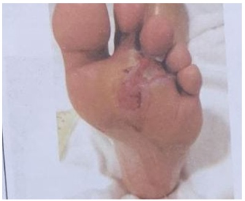
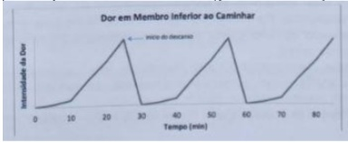
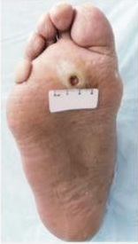
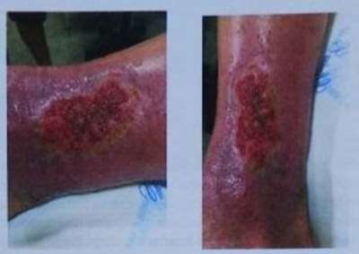
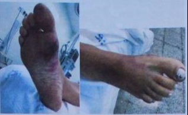
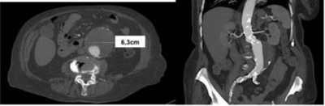
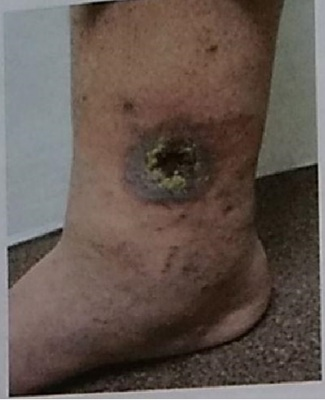
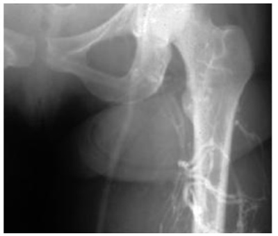
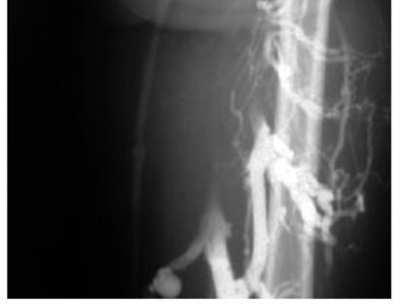
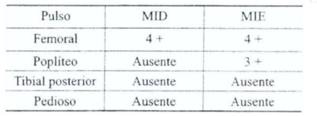

Questão 1 · Anticoagulação · Medidas Iniciais · Cirurgia · 4000127764Mulher de 24 anos, gestante, com 19 semanas de idade gestacional. Relata dor em perna esquerda. Ao exame físico apresenta pulsos presentes e simétricos em membros inferiores, varizes de grossos calibres em ambas pernas. Apresenta edema de 3+/4+ apenas em membro inferior esquerdo, com dor a dorsi exão de pé esquerdo. De acordo com o quadro clínico, qual a melhor alternativa:
A Trata-se de quadro de trombose venosa profunda aguda, portanto, deve-se iniciar anticoagulação com heparina.
B Trata-se de quadro de tromboflebite aguda, portanto, deve-se iniciar anticoagulação com varfarina.
C Trata-se de quadro de trombose venosa profunda, portanto, deve-se iniciar anticoagulação com clopidogrel.
D Trata-se de quadro de trombose arterial, portanto, deve-se iniciar anticoagulação com heparina.
Questão 2 · Apresentação Clínica · Diagnóstico · Cirurgia · 4000127319Paciente do sexo masculino, 78 anos, procurou uma UPA com queixa de dor em todo o pé esquerdo, de moderada intensidade, além de pequeno ferimento que ocorreu há cerca de 20 dias após um pequeno incidente doméstico (esbarrou na quina de um móvel) e ainda não cicatrizou. Faz uso de medicações para tratamento clínico para dislipidemia e hipertensão arterial sistêmica. É tabagista há 30 anos, com um consumo estimado de 10 cigarros ao dia. Nega tratamento para diabetes. Nega sintomas de claudicação intermitente. Ao exame, apresentava-se com taquicardia leve e pulso irregular, os pulsos femoral e poplíteo à esquerda não eram palpáveis e havia um ferimento super cial de 0,5 cm em dorso do 4o pododáctilo esquerdo, sem sinais de gangrena. Com base na situação clínica exposta, qual dos achados abaixo é indicativo de encaminhamento a um serviço de cirurgia vascular?
A Taquicardia com frequência cardíaca irregular.
B Ausência de pulsos femoral e poplíteo em MIE.
C Dor localizada em todo o pé esquerdo.
D Ferimento no dorso do 4° pododáctilo.
Questão 3 · Medidas Iniciais · Cirurgia · 4000123442Assinale a assertiva correta sobre tratamento de oclusão arterial aguda.
A Anticoagulação sistêmica com heparina não fracionada deve ser iniciada imediatamente, para diminuir o risco de propagação dos trombos e prevenir a trombose da microcirculação.
B Analgesia intravenosa não deve ser realizada por poder mascarar os sintomas e dificultar o diagnóstico.
C Fasciotomia após revascularização só deve ser realizada em pacientes com isquemia aguda, com anestesia e perda de motricidade do membro.
D Somente 10% dos pacientes com isquemia aguda de membro superior não tratados evoluem com complicações tardias, como dor crônica.
E Tratamento endovascular não deve ser realizado em pacientes com oclusão arterial aguda.
Questão 4 · Classif icação Clínica CEAP · Cirurgia · 4000120379A respeito da classificação CEAP para insuficiência venosa crônica (IVC), assinale a alternativa correta.
A Pacientes com classe clínica C2 são portadores de telangectasias ou veias reticulares.
B A classificação fisiopatológica divide os pacientes com IVC em causas congênita, indeterminada/primária e conhecida/secundária.
C Pacientes com classe clínica C4 apresentam alterações tróficas da pele comohiperpigmentação, eczema e lipodermatoesclerose.
D Pacientes com classe clínica C5 apresentam úlcera em atividade.
Questão 5 · Manif estações Clínicas · Tromboembolismo Arterial · Cirurgia · 4000119357Mulher, 60 anos de idade, com antecedente de brilação atrial crônica em uso de varfarina sódica, é admitida no pronto socorro com quadro de dor súbita em membro inferior esquerdo de forte intensidade há 1 hora. Ao exame físico, evidencia- se ausência de pulso em artérias tibiais e pediosa esquerda, além de diminuição importante de temperatura no membro referido. Não há edema em membros inferiores. Qual é a hipótese diagnóstica?
A Flegmasia cerúlea dolens.
B Obstrução arterial aguda.
C Trombose venosa profunda.
D Linfedema.
Questão 6 · Cirurgia · Tratamento Cirúrgico do Aneurisma de Aorta Abdominal e Complicações Pósoperatórias · 4000119352Com relação ao aneurisma de aorta abdominal, é correto afirmar que:
A O exame físico abdominal normal exclui a necessidade de investigação complementar.
B Indica-se intervenção nos aneurismas maiores que 5,5 cm de diâmetro.
C O exame padrão ouro para o diagnóstico é a aortografia.
D A associação entre aneurisma de aorta abdominal e doença arterial coronária é baixa.
Questão 7 · Fatores de Risco · Apresentação Clínica · Cirurgia · 4000118776A tríade de Virchow para trombose venosa profunda compreende:
A Estase venosa, hipercoagulabilidade e lesão endotelial.
B Hipercoagulabilidade, edema e baixa perfusão tecidual.
C Edema, assimetria e dor em panturrilha.
D Assimetria, estase venosa e baixa perfusão tecidual.
E Nenhuma das alternativas.
Questão 8 · Tratamento Cirúrgico · Cirurgia · 4000118672Homem de 75 anos diabético e hipertenso há 41 anos, teve ferimento perfurante em pé direito há 15 dias. Evoluiu com gangrena seca do 3º pododáctilo direito. Foi submetido à arteriogra a que mostrou estenose segmentar crítica de artéria ilíaca comum direita. A melhor conduta para o paciente em questão é:
A Amputação do 5º pododáctilo.
B Angioplastia com stent de artéria ilíaca comum direita.
C Enxerto aorto-ilíaco direito
D Endarterectomia de artéria ilíaca comum direita.
Questão 9 · Anticoagulação · Seguimento póstratamento · Cirurgia · 4000116652Paciente com neoplasia de colo de útero, em tratamento com radioquimioterapia, apresentando sangramento vaginal, evoluiu com dor e edema no membro inferior direito. Qual a sua conduta para tratamento no caso clínico da questão anterior?
A Filtro de veia cava.
B Anticoagulação plena com enoxeparina.
C Amputação da perna.
D Aumento da ingesta via oral de proteínas.
E Revascularização de perna direita por angioplastia.
Questão 10 · Anticoagulação · Seguimento póstratamento · Cirurgia · 4000116621Paciente com neoplasia de colo de útero, em tratamento com radioquimioterapia, apresentando sangramento vaginal, evoluiu com dor e edema no membro inferior direito. Qual a sua hipótese diagnóstica?
A Varizes de MMII.
B Edema por desproteinemia devido a neoplasia.
C Úlcera de perna direita.
D Trombose venosa profunda.
E Isquemia crítica.
Questão 11 · Conduta nos Aneurismas de Aorta Abdominal · Cirurgia · 4000113979Um paciente do sexo masculino, 66 anos de idade, comparece ao ambulatório de cirurgia vascular encaminhado pelo médico da unidade básica de saúde após realizar uma ultrassonogra a de abdome de rotina sendo encontrado um aneurisma de aorta abdominal fusiforme, abaixo das artérias renais, com diâmetro máximo de 42 mm. O paciente é assintomático, portador de hipertensão arterial controlada, em uso de valsartana. Sobre o caso, assinale a correta:
A Aneurismas fusiformes sempre devem ser abordados cirurgicamente, independente do diâmetro.
B No exame físico desse paciente, encontraremos o sinal de DeBakey positivo.
C Esse paciente deverá realizar acompanhamento para monitorização do diâmetro do aneurisma.
D O paciente deverá ser abordado cirurgicamente em regime de urgência.
Questão 12 · Manif estações Clínicas · Medidas Iniciais · Cirurgia · 4000111797Homem, 78 anos, com queixa de dor à deambulação bilateral, porém mais intensa em membro inferior esquerdo há 20 anos. Há 4 horas apresentou dor súbita em pé direito, frialdade e parestesia. É portador de hipertensão arterial sistêmica e tabagismo ativo. Ao exame físico: bom estado geral, corado e hidratado. Ritmo cardíaco regular, sem sopros, PA: 180 x 100 mmHg e frequência cardíaca de 67 bpm. Exame físico vascular: presença de pulsos femorais bilaterais, porém ausência de pulsos poplíteos ou mais distais bilateralmente. O pé direito está frio, com perda sensitiva, porém sem fraqueza muscular e sinal doppler arterial ausente neste pé. Apresenta ainda cianose não xa de pododáctilos em pé direito. Não há lesões tróficas. Qual o diagnóstico e a melhor conduta?
A Obstrução arterial crônica agudizada. Deve-se iniciar anticoagulação e, se não houver melhora em 24 horas, está indicada exploração arterial.
B Obstrução arterial crônica com isquemia crítica. Paciente deve ser internado e solicitado inicialmente um ultrassom arterial que auxiliará na estratégia cirúrgica.
C Obstrução arterial aguda de provável origem trombótica em paciente com doença arterial crônica subjacente. Deve ser iniciado antiagregação e anticoagulação imediatas e realizado um exame de imagem inicialmente.
D Doença arterial obstrutiva periférica com claudicação limitante e embolia aguda sobrejacente em membro mais sadio. Está indicado trombólise e exploração cirúrgica para realização de tromboembolectomia à Fogarty.
Questão 13 · Conduta nos Aneurismas de Aorta Abdominal · Conf irmação Diagnóstica · Cirurgia · 4000111617Homem, 80 anos, assintomático, com achado em ultrassom de rotina de aneurisma de aorta abdominal infra-renal de 4,2 x 4,1 cm de diâmetros e 9,0 cm de extensão. Realizou então angiotomogra a que confirmou achados do ultrassom mostrando ainda colo de 2,0 cm de extensão, lumem de 2,5 cm de diâmetro e saco aneurismático com trombos até próximo a bifurcação das ilíacas. Qual a conduta atual mais adequada para este caso?
A Tratamento endovascular minimamente invasivo.
B Cirurgia aberta convencional.
C Seguimento com exames de imagem a cada 6 meses.
D Cirurgia robótica transperitoneal.
Questão 14 · Tratamento Clínico · Cirurgia · 4000110196Paciente de 62 anos, hipertenso, diabético e tabagista com história de claudicaçāo limitante de membros inferiores, chega para primeira consulta ambulatorial após encaminhamento do pronto-socorro. Qual a melhor conduta a ser adotada?
A Controlar fatores de risco e prescrição de antiagregante plaquetário.
B Controlar fatores de risco, estimular a deambulação e prescrever cilostazol.
C Indicar by pass arterial após investigação do nível da obstrução.
D Iniciar anticoagulação com controle ambulatorial do INR.
E Indicar cirurgia endovascular (stent).
Questão 15 · Conf irmação Diagnóstica · Cirurgia · 4000108325Qual o exame mais indicado para investigação de paciente com suspeita de aneurisma da aorta abdominal não complicado?
A Eco-Doppler arterial.
B Angiotomografia computadorizada.
C Arteriografia.
D Ressonância magnética.
Questão 16 · Filtro de Veia Cava · Cirurgia · 4000108301São indicações para implante de filtro de veia cava, EXCETO:
A tromboembolismo recorrente apesar da anticoagulação.
B trombose venosa profunda e contraindicação à anticoagulação.
C trombose venosa profunda de membro superior.
D complicações da anticoagulação.
Questão 17 · Manif estações Clínicas · Cirurgia · Conf irmação Diagnóstica · 4000107739Homem, 58 anos, com antecedentes pessoais de tabagismo e hipertensão arterial sistêmica, vem ao Pronto-Socorro com queixa de dor em membro inferior direito há 2 dias, de forte intensidade, associada a esfriamento local. Ao exame físico, apresenta hipotermia e palidez deste membro em relação ao contralateral. O pulso femoral está presente. Todos os outros pulsos estão ausentes no membro inferior direito. Qual é o diagnóstico principal para este paciente?
A Oclusão arterial aguda.
B Síndrome Compartimental.
C Aneurisma da artéria poplítea.
D Trombose venosa profunda.
Questão 18 · Filtro de Veia Cava · Cirurgia · 4000107160Mulher, 62 anos de idade, é admitida em pronto-socorro por quadro de trombose venosa profunda em sistema ilíaco- femoral. Apresenta, como antecedente, quadro de acidente vascular encefálico hemorrágico há 2 semanas, sem sequelas. Qual é a conduta mais adequada neste cenário?
A Anticoagulação com inibidores de vitamina K.
B Filtro de veia cava inferior.
C Anticoagulação com rivaroxabana.
D Antiagregação plaquetária.
Questão 19 · Conduta nos Aneurismas de Aorta Abdominal · Cirurgia · 4000106284Tratamento Cirúrgico do Aneurisma de Aorta Abdominal e Complicações Pósoperatórias Um homem de 65 anos, tabagista de 1 maço de cigarros ao dia há 40 anos, sem DPOC (doença pulmonar obstrutiva crônica) ou outras comorbidades, é portador de aneurisma fusiforme da aorta abdominal infrarrenal, assintomático, descoberto em exame de rotina. Está indicada correção cirúrgica do aneurisma desse paciente, se o aneurisma tiver diâmetro a partir de
A 5,5 cm.
B 6,0 cm.
C 4,0 cm.
D 4,5 cm.
E 5,0 cm.
Questão 20 · Conf irmação Diagnóstica · Cirurgia · 4000095926Sobre DIAGNÓSTICO na TVP, qual destas ações NÃO está indicada?
A Flebografia
B Scan Duplex Venoso
C D-dímero
D Escore de Wells
E ECO-TT
Questão 21 · Oclusão Arterial Aguda OAA · Tromboembolismo Arterial · Cirurgia · 4000094757Mulher, 60 anos de idade, com antecedente de brilação atrial crônica em uso de varfarina sódica, é admitida no pronto socorro com quadro de dor súbita em membro inferior esquerdo de forte intensidade há 1 hora. Ao exame físico, evidencia- se ausência de pulso em artérias tibiais e pediosa esquerda, além de diminuição importante de temperatura no membro referido. Não há edema em membros inferiores. Qual é a hipótese diagnóstica?
A Flegmasia cerúlea dolens.
B Obstrução arterial aguda.
C Trombose venosa profunda.
D Linfedema.
Questão 22 · Cirurgia · Tratamento · 4000082422Um homem de 74 anos dá entrada no pronto-atendimento apresentando dor súbita há 5 horas com diminuição de temperatura do pé direito, anestesiado, impedindo-o de deambular. O exame clínico vascular demonstra pulsos normais no membro inferior esquerdo e ausência de pulsos poplíteo distal à direita. Sofreu infarto agudo do miocárdio há 4 meses. Para a situação, a conduta apropriada é
A empregar analgésico, heparina e/ou fibrinolítico endovenoso.
B administrar heparina em bomba e preparar para intervenção cirúrgica.
C aquecer o pé e realizar analgesia.
D heparinizar o paciente e preparar para arteriografia.
Questão 23 · Cirurgia · Tratamento Cirúrgico do Aneurisma de Aorta Abdominal e Complicações Pósoperatórias · 4000075672Homem, 68 anos, tabagista é submetido à correção de aneurisma de aorta abdominal. No segundo dia de pós-operatório apresenta dor e distensão abdominal, com quadro de sepse de evolução rápida. A hipótese diagnóstica mais provável para este quadro é:
A atelectasia pós operatória
B infecção da prótese da aorta
C colite isquêmica com necrose do cólon
D pielonefrite por baixo fluxo renal
Questão 24 · Apêndice Anatomia · Cirurgia · 4000075598Compõem o sistema venoso profundo dos membros inferiores:
A veia femoral, veia poplitea, veia gastrocnêmia
B veia gastrocnêmia, veia poplitea, veia basilar
C veia safena, magna, veia gastrocnêmia, veia femoral
D veia poplitea, veia safena magna, veia basilar
Questão 25 · Cirurgia · Trombof lebite · 4000075511Mulher, 42 anos, internada apresenta área de vermelhidão, edema e induração no antebraço esquerdo. Relata que há dois dias estava em soroterapia. O diagnóstico mais provável e o tratamento mais adequado são, respectivamente:
A trombose de artéria sub-clávia / heparinização plena
B tromboflebite / anti-inflamatório
C picada de mosquito / anti-histamínico
D trombose de veia sub-clávia / antiagregante plaquetário
Questão 26 · Tratamento Clínico · Cirurgia · 4000074610Homem, 67 anos de idade, em seguimento na Unidade Básica de Saúde próxima à sua residência com os diagnósticos de hipertensão arterial sistêmica, diabetes mellitus tipo 2 e dislipidemia. Refere também ser tabagista desde os 20 anos de idade, cerca de 1 maço por dia. Procura atendimento com queixa de dor nas panturrilhas há cerca de 6 meses, que se inicia após caminhar por volta de 3 quarteirões (300 metros). Refere inclusive que necessita interromper a atividade, ocorrendo melhora da dor. Em relação ao tratamento proposto, assinale a alternativa correta:
A O tratamento deve ser inicialmente clínico, com controle das comorbidades, cessação do tabagismo e caminhadas frequentes.
B O tratamento cirúrgico é sempre a primeira opção, podendo ser realizado por via cirúrgica convencional ou minimamente invasiva (angioplastia.
C Trata-se de um paciente com oclusão arterial aguda e, dessa forma, as medidas clínicas são pouco eficazes.
D Em caso de cirurgia, trata-se de procedimento de baixo risco e sem chance de complicações, tanto clínicas quanto cirúrgicas.
Questão 27 · Conf irmação Diagnóstica · Cirurgia · 4000074207Tratamento Cirúrgico do Aneurisma de Aorta Abdominal e Complicações Pósoperatórias Diante da suspeita de aneurisma de aorta abdominal, qual o exame que fornece a maior quantidade de informações necessárias para programação de correção cirúrgica?
A Ultrassonografia de abdome.
B Tomografia computadorizada de abdome com contraste.
C Aortografia.
D Radiografia simples de abdome.
Questão 28 · Fisiopatologia · Cirurgia · 4000065419Há mais de 150 anos atrás Rudolf Virchowapud Merli descreveu a tríade de fatores responsáveis pela trombogênese, que incluem:
A Estase venosa, dano endotelial e hipercoagulação
B Hipocoagulação, estase arterial e dano epitelial
C Estase arterial, hipocoagulação e dano endotelial
D Estase arterial, dano endotelial e hipercoagulação
Questão 29 · Manif estações Clínicas · Cirurgia · 4000064433A DAOP, Doença Arterial Oclusiva Periférica é uma patologia grave presente em pacientes com doenças crônicas com mal controle e responde por sequelas que reduzem a qualidade de vida dos pacientes e eleva os custos em saúde. Por isso o foco atual do sistema de saúde é otimizar o cuidado as doenças crônicas não transmissíveis. Assinale a alternativa correta sobre a descompensação aguda da DAOP.
A Empastamento e edema assimétrico do membro inferior, associado a pulso distal filiforme é sinal de alerta para insuficiência arterial.
B A ausência de pulso distal associada a paresia, parestesia, frialdade e cianose são os sinais de alerta para oclusão arterial aguda.
C Frente a um paciente com ausência de pulso distal bilateral e cianose de um dedo do pé unilateral com mumificação, devemos proceder á internação e trombólise.
D A DAOP com descompensação aguda se manifesta com trombose venosa e a ausência de pulso distal está presente na flegmasia cerulea dolens.
E A oclusão arterial aguda é a complicação mais temida e com maiores efeitos deletérios, e se manifesta por rubor, calor e dor à palpação do trajeto da safena.
Questão 30 · Apresentação Clínica · Cirurgia · 4000053584No exame físico de um paciente com insuficiência venosa crônica, podemos encontrar os seguintes sinais:
A eczema, úlcera em face externa da perna, lipodermatoesclerose e varizes calibrosas.
B hiperpigmentação secundária à deposição de hemossiderina, lipodermatoesclerose, eczema e palidez dos pés.
C hiperpigmentação secundária à deposição de hemossiderina, eczema, úlcera em faceinterna da perna e lipodermatoesclerose.
D hiperpigmentação secundária à deposição de hemossiderina, diminuição de pelos,eczema, úlcera em face interna da perna e lipodermatoesclerose.
E hipopigmentação secundária à deposição de hemossiderina, diminuição de pelos,eczema, úlcera em face interna da perna e lipodermatoesclerose.
Questão 31 · Anticoagulação · Cirurgia · 4000041734J.S.A. foi submetido a cirurgia bariátrica há 02 semanas. Retorna ao Pronto Socorro com quadro de dor em membro inferior direito, sensação de peso, di culdade para andar e edema progressivo até joelho. Ao exame paciente apresenta edema até região distal de coxa direita, sinal de Homans positivo. Realizado ultrasson com doppler venoso que confirmou Trombose Venosa Profunda aguda. Sobre o tratamento com anticoagulação deste paciente é possível afirmar:
A Deve ser iniciado imediatamente com warfarina isolada até se obter INR (Razão Normalizada Internacional do Tempo de Protrombina) entre 2 e 3.
B A duração recomendada do tratamento deve ser de 03 meses.
C Deve ser iniciado warfarina de imediato e heparina após 48h.
D Não há necessidade de anticoagulação plena.
Questão 32 · Anticoagulação · Cirurgia · 4000034434Paciente de 37 naos, gestante de 22 semanas, queixa-se de dor em membro inferior esquerdo (MIE) com empastamento da panturrilha ipsilateral desde a 18ª semana. Ao exame físico, apresenta sinal de homans positivo, com edema discreto (+/4+) em MIE. A dosagem de D-dímero foi elevada e o ecodoppler venoso demonstrou presença de trombo recente em veia femoral superficial de MIE. A conduta MAIS INDICADA nesse momento é a administração de:
A ácido acetilsalissilico.
B enoxaparina.
C rivaroxabana.
D varfarina.
Questão 33 · Tromboembolismo Arterial · Cirurgia · 4000019553Um paciente internado por infarto agudo do miocárdio, apresentando dor súbita, palidez e parestesia em membro inferior direito, tem como provável diagnóstico:
A oclusão arterial aguda trombótica.
B trombose venosa profunda.
C doença cística adventicial.
D oclusão arterial aguda embólica.
Questão 34 · Medidas Iniciais · Cirurgia · 4000011199Homem, 65 anos de idade, hipertenso e dislipidêmico, refere dor ao repouso no membro inferior direito há 7 dias com piora importante há 1 dia. Apresenta claudicação intermitente para 50 metros há 1 ano. Ao exame específico vascular: pulsos femorais 4+/4, poplíteos, tibiais posteriores e anteriores 0+/4. Índice pressórico tornozelo-braço: direito 0,45; esquerdo 0,60. Diminuição de temperatura e cianose não xa no membro inferior direito. Qual a hipótese diagnóstica mais provável e conduta inicial?
A Trombose arterial aguda; heparinização e proteção térmica do membro
B Embolia arterial aguda; heparinização e proteção térmica do membro
C Trombose arterial aguda; cirurgia de urgência com cateter de Fogarty
D Embolia arterial aguda; cirurgia de urgência com cateter de Fogarty
E Embolia arterial aguda; fibrinolítico intra-arterial baixa dose
Questão 35 · Cirurgia · Trombof lebite · 4000011183Com relação a tromboflebite superficial ascendente, é correto afirmar:
A ecografia vascular com Doppler não deve ser realizado devido ao risco de embolização
B o tratamento com fibrinolítico deve ser preconizado o quanto antes
C compressa fria e compressão elástica fazem parte de terapêutica habitual
D geralmente ocorre bilateralmente e o uso de antibiótico deve ser generalizado
E caso acometa o terço médio de coxa está indicada a ligadura cirúrgica da croça da safena magna
Questão 36 · Estenose Carotídea · Cirurgia · 4000004705Paciente masculino, 72 anos, portador de angina instável, com indicação de revascularização do miocárdio. Na avaliação pré-operatória, foi identi cado uma estenose de carótida interna esquerda de 50 a 69% e, no lado direito, ausência de lesões. Sabendo que o paciente não tinha história de eventos neurológicos prévios, qual a indicação mais correta?
A Tratamento clínico da doença carotídea e proceder apenas à revascularização do miocárdio.
B Endarterectomia carotídea prévia à cirurgia do miocárdio.
C Angioplastia/stent de carótida esquerda por oferecer um risco menor de evento cardiológico no pós-operatório comparado à cirurgia convencional e, após 3 meses, realizar a revascularização do miocárdio.
D Revascularização do miocárdio inicialmente e na sequência a endarterectomia carotídea, na mesma internação hospitalar, com um intervalo de, aproximadamente, 7 dias entre os procedimentos.
E Somente Revascularização do Miocárdio, sem necessidade de tratamento clínico.
Revisar: possível letra faltando em enunciado
Questão 37 · Anticoagulação · Trombose Venosa Prof unda TVP · Apresentação Clínica · 4000120645Mulher de 22 anos, sem comorbidades, apresenta dor e inchaço em panturrilha direita há 1 dia. Exame físico: temperatura de 37,5°C, membro inferior direito com edema e empastamento de panturrilha. O diagnóstico mais provável e a conduta mais adequada são:
A erisipela; solicitar hemograma e PCR e iniciar antibioticoterapia.
B trombose venosa profunda; solicitar ultrassonografia vascular com Doppler para confirmação diagnóstica e, se confirmado, iniciar tratamento anticoagulante.
C trombose venosa profunda; solicitar flebografia para confirmação diagnóstica e, se confirmado, iniciar tratamento com antiagregante plaquetário.
D trombose venosa profunda; solicitar D-dímero e, se positivo, iniciar tratamento anticoagulante.
Questão 38 · Tromboembolismo Arterial · Cirurgia · Revascularização Endovascular · 4000120611Mulher de 64 anos apresenta membro inferior direito (MID) pálido e muito doloroso há 3 horas. Encontra-se com o pé direito pendente na maca, com cianose não xa nos artelhos, gradiente térmico no meio da perna, sem perdas de sensibilidade ou da motricidade nesse membro. Refere nunca ter apresentado dor semelhante nos membros inferiores. Relata que recentemente vêm sentindo episódios súbitos de palpitações. Exame físico: FC 120 bpm, com bulhas arrítmicas. Membros inferiores: pulsos poplíteo, tibial anterior e tibial posterior não palpáveis à direita e presentes e cheios à esquerda; edema da perna direita, com cianose distal. O diagnóstico e a conduta mais adequada são:
A oclusão arterial aguda do MID, de provável origem embólica; cirurgia de embolectomia com cateter tipo Fogarty.
B oclusão arterial aguda do MID, de provável origem trombótica; cirurgia de embolectomia com cateter tipo Fogarty.
C flegmasia cerúlea dolens; o tratamento deve ser cirurgia de embolectomia com cateter tipo Fogarty.
D oclusão arterial aguda do MID, de provável origem embólica; tratamento endovascular, com angioplastia e implante de stent.
Questão 39 · Cirurgia · Abordagem cirúrgica do pé diabético · 4000106496Mulher, 66 anos, portadora de diabete melito há 12 anos, procura o hospital com quadro de úlcera plantar infectada de odor fétido, flegmão ascendente e pulsos periféricos palpáveis. Inicia antibioticoterapia. Qual é a conduta complementar?

A Enxerto femoropoplíteo
B Desbridamento.
C Endarterectomia e curativos seriados.
D Amputação primária.
Questão 40 · Tratamento Clínico · Cirurgia · 4000105566Homem de 56 anos, professor de matemática, queixa-se de dor em pernas bilateralmente. Era sedentário, porém recentemente decidiu voltar a realizar atividades físicas. É hipertenso controlado e tabagista há 40 anos. Faz uso apenas de losartana. Muito detalhista, desenha um gráfico para exempli car a característica da sua dor (abaixo): Baseando-se no diagnóstico mais provável, qual a melhor conduta inicial?

A Anti-inflamatórios não esteroidais, meias elásticas e cilostazol.
B Ácido acetilsalicílico, venotônicos, medidas posturais e meias elásticas.
C Ácido acetilsalicílico, estatina e atividade física programada.
D Anti-inflamatórios não esteroidais, fisioterapia motora, solicitação de ressonância nuclear magnética.
Questão 41 · Cirurgia · Trombose Arterial · 4000100854Mulher de 57 anos, tabagista há 40 anos, 2 maços/dia, hipertensa, informa que há 3 anos tem apresentado dor em panturrilha esquerda que di culta a sua caminhada. Há 1 dia com dor de forte intensidade em membro inferior esquerdo, "formigamento", esfriamento e palidez. Ao exame físico apresenta palidez e hipotermia do membro inferior esquerdo em relação ao contralateral. O pulso femoral esquerdo está presente e os outros pulsos estão ausentes em membro inferior esquerdo. O diagnóstico provável para este paciente é:
A Oclusão arterial aguda.
B Trombose venosa profunda.
C Trombose venosa profunda.
D Síndrome compartimental.
Questão 42 · Tratamento Cirúrgico · Cirurgia · 4000100779Mulher de 82 anos diabética e hipertensa, teve ferimento perfurante em pé direito há 15 dias. Evoluiu com gangrena seca do 3° pododáctilo direito. Foi submetida à arteriogra a que mostrou estenose segmentar crítica de artéria ilíaca comum direita. A melhor conduta para esta paciente é:
A Amputação do 5° pododáctilo.
B Enxerto aorto-ilíaco direito.
C Endarterectomia de artéria ilíaca comum direita.
D Angioplastia com stent de artéria ilíaca comum direita.
Questão 43 · Conf irmação Diagnóstica · Cirurgia · 4000100039Uma paciente do sexo feminino de 72 anos de idade, no pós-operatório recente de uma cirurgia de prótese de quadril, apresenta edema com cacifo na perna, dor e palidez. Qual o diagnóstico mais provável para essa paciente?
A Obstrução arterial aguda de artéria poplítea.
B TVP envolvendo o sistema iliofemoral.
C Obstrução arterial crônica de artéria femoral.
D TVP de veias da panturrilha.
Questão 44 · Fibrilação Atrial · Oclusão Arterial Aguda OAA · Cirurgia · 4000099319A oclusão arterial aguda vem aumentando sua incidência nas últimas décadas, conforme aumento da expectativa de vida da população e a progressão da doença aterosclerótica cardiovascular. Em relação a esse tema, assinale a alternativa CORRETA:
A Os traumas são responsáveis pela grande maioria das oclusões arteriais agudas.
B A fibrilação atrial, produzindo trombos murais, constitui-se como a principal fonte de êmbolos.
C De um modo geral, o quadro clínico da oclusão arterial aguda apresenta- se com início súbito, associado com frialdade, palidez da extremidade e ausência de pulso distal ao ponto de oclusão, mas com ausência de dor.
D A angiografia por subtração digital deverá sempre ser realizada previamente ao tratamento, orientando na conduta mais adequada.
Questão 45 · Diagnóstico · Cirurgia · 4000097512Mulher, 65a, vem à consulta referindo dor em panturrilhas ao caminhar em torno de 200 metros, em subidas. Antecedentes pessoais: diabetes mellitus, nega tabagismo e hipertensão arterial sistêmica. Exame físico: pulsos poplíteos e tibiais palpáveis simétricos bilateralmente. O EXAME A SER REALIZADO É:
A Medida do índice pressórico tornozelo/braço em repouso e pós caminhada.
B Mapeamento arterial dos membros inferiores por ultrassonografia duplex.
C Angioressonância magnética com gadolínio.
D Cateterismo para arteriografia por subtração digital.
Questão 46 · Tratamento Cirúrgico · Cirurgia · 4000085486Mulher, 63 anos, diabética e hipertensa, com dor intensa em membro inferior direito há cerca de três semanas, necessitando dormir com o membro pendente. Relato de claudicação de membros inferiores há cerca de um ano, com piora progressiva. Exame físico: pulsos femorais presentes bilateralmente popliteos e distais ausentes em ambos os membros inferiores. Pé direito frio, edemaciado, de cor avermelhada ("pé de lagosta"). Pé esquerdo com enchimento capilar lentificado, porém aquecido. A conduta mais adequada para esta paciente é:
A Controlar os fatores de risco e estabelecer programa de caminhadas.
B Realizar arteriografia e revascularização do membro inferior direito em caráter de urgência.
C Realizar tromboembolectomia de membro inferior direito com cateter de Fogarty.
D Programar amputação primária do pé direito.
Questão 47 · Tromboembolismo Arterial · Cirurgia · Tratamento · 4000079503Um paciente de 58 anos, com quadro de oclusão arterial aguda em membro inferior esquerdo, sem uxo arterial audível e com fluxo venoso audível ao doppler, apresenta motricidade no pé, mas sensibilidade reduzida. Considerando esse caso, a conduta a ser adotada é
A iniciar a anticoagulação sistêmica e avaliar fonte emboligênica com o ecocardiograma.
B investigar com o doppler e embolectomia com cateter de Fogarty.
C explicar ao paciente e familiares a necessidade da amputação primária do membro.
D realizar a arteriografia do membro e fibrinólise intratrombo (êmbolo).
Questão 48 · Tratamento · Conf irmação Diagnóstica · Cirurgia · 4000054672Paciente feminina, 30 anos de idade, comparece ao serviço de emergência com queixa de dor, cianose e parestesia na mão direita. Sem pulsos distais. Tabagista há dezessete anos, com relato de três abortamentos prévios e início recente de anticoncepcional hormonal oral. Sobre o diagnóstico e o tratamento nesse caso, assinale a alternativa correta.
A Provável trombose arterial em paciente com mais de um fator de risco, sendo necessário tratamento invasivo.
B O quadro é confirmatório de síndrome antifosfolípide e não necessita de tratamento invasivo.
C O quadro é de oclusão arterial aguda e sua resolução é espontânea.
D O diagnóstico é de oclusão arterial e deve-se adotar tratamento medicamentoso com heparina, sem risco de evolução desfavorável.
E A causa mais comum de oclusão arterial aguda é a aterosclerose, sendo, nesse caso, a angioplastia isolada a melhor forma de tratamento.
Questão 49 · Cirurgia · Conf irmação Diagnóstica · 4000051999No diagnóstico da doença arterial periférica, além do exame físico para avaliar a presença dos pulsos femorais, poplíteos e distais, existem os exames de imagem que confirmam e também servem de planejamento para um possível tratamento cirúrgico ou endovascular. Com relação aos exames de imagem na doença arterial, assinale a alternativa verdadeira.
A A angiografia continua sendo o exame padrão-ouro apesar de ser uma técnica invasiva e com uso de contraste.
B A angiorressonância é o exame que mostra mais detalhes para um planejamento de um tratamento endovascular.
C A angiotomografia está sendo cada vez menos utilizada por usar muito volume de constraste e muita radiação ao paciente.
D Apesar da evolução dos aparelhos de ecografia com imagens cada vez mais detalhadas, ainda não é possível realizar procedimentos guiados por ecodoppler.
E O ultrassom vascular ou ecodoppler é o exame padrão ouro hoje em dia, pois consegue avaliar o fluxo sanguíneo, diâmetro dos vasos e a velocidade do sangue no local de uma possível estenose ou oclusão arterial.
Questão 50 · Classif icação dos Sintomas · Cirurgia · 4000051995Com relação à classificação da doença arterial periférica, existem as classificações de Fontaine e de Rutherford. Sobre a classificação de Rutherford, assinale a alternativa verdadeira:
A No grau 5, existe perda de tecido maior.
B No grau 4, existe perda de tecido menor.
C No grau 1, o paciente está assintomático.
D No grau 2, o paciente apresenta claudicação intermitente leve.
E No grau 3, o paciente apresenta claudicação intermitente grave.
Questão 51 · O pé diabético · Cirurgia · 4000049388Antes de iniciar o tratamento do pé diabético deve-se classificar a lesão; usando a Classi cação de Szilagyi podemos afirmar que:
A classe I- claudicação intermitente progressiva e incapacitante
B Classe II- Lesão pré necrótica ou necrose isquêmica
C Classe III- dor em repouso
D Classe IV- gangrena extensa acometendo todo o pé
Questão 52 · Anticoagulação · Cirurgia · 4000043141Paciente 32 anos, sexo feminino, com queixa de dor em panturrilha esquerda e câimbras há 1 dia. Relata que no dia anterior havia realizado viagem de carro por 15h. Nuligesta. Sem história de tabagismo. Em uso de contraceptivo oral de longa data. Ao exame: Panturrilha esquerda empastada. Boa perfusão periférica. Pulsos distais presentes, amplos e simpétricos. Considerando o caso descrito, assinale a alternativa correta quanto ao diagnóstico e terapêutica.
A Nesse caso, seria importante a dosagem do D-Dímero e este sendo positivo, dispensaria o ultrassom Doppler como exame confirmatório
B Trata-se de um caso de Phlegmasia Coerelua Dolens e é imperioso neste caso iniciar tratamento trombolítico sistêmico, implante de filtro de veia cava e manter posteriormente heparina de baixo peso molecular.
C Aparentemente sem elementos que contraindiquem anticoagulação, poderia iniciar com heparina após confirmação diagnóstica.
D O empastamento de panturrilha traduz a síndrome compartimental, que pode evoluir com isquemia, sendo, neste caso, indicado a fasciotomia profilática.
Questão 53 · Anticoagulação · Cirurgia · 4000042967Mulher, 52 anos, hipertensa, professora de Cross t, em tratamento medicamentoso para reposição estrogênica. Procura atendimento por dor e edema em membro inferior direito de início há 1 dia, com piora à deambulação. Ao exame: panturrilha direita empastada, pulsos pedioso e tibial posterior discretamente reduzidos, extremidade quente e hiperemiada, com sinal da Bandeira (+). A principal hipótese diagnóstica e o tratamento a ser empregado são:
A rotura muscular aguda, drenagem do hematoma.
B trombose venosa profunda, rivaroxabana.
C oclusão arterial aguda, embolectomia.
D tromboflebite superficial, antibioticoterapia.
Questão 54 · Aneurisma de Aorta Torácica · Cirurgia · Fisiopatologia e Evolução Natural · 4000019530Os aneurismas aórticos ocorrem com maior incidência na aorta abdominal em comparação com os de aorta torácica. Uma das possíveis causas para que isso aconteça é:
A presença de maior fluxo turbilhonado na aorta torácica.
B presença de maior número de camadas elásticas na parede da aorta abdominal.
C presença de fragilidade gradual da aorta abdominal, tornando-a mais complacente pela maior quantidade de vaso- vasorum.
D presença de endurecimento gradual da aorta abdominal, tornando-a mais rígida pela menor quantidade de fibras elásticas.
Questão 55 · Fatores de Risco · Cirurgia · 4000019485Leia o caso clínico a seguir. Paciente de 57 anos, de cor branca, hipertensa, obesa, tabagista, diabética, portadora de bromialgia e de passado de doença neoplásica e em uso de reposição hormonal, apresentou ao nal de uma longa viagem de ônibus, subitamente, dor na panturrilha direita e sinais clínicos Homans positivo, bandeira positivo e Olow positivo. Foi diagnosticada com trombose venosa profunda do membro inferior direito. Quais fatores de risco estão possivelmente relacionados a esse diagnóstico?
A Idade, obesidade, tabagismo, sangue tipo A ou O, reposição hormonal, longo período de estase, passado de doença neoplásica.
B Idade, obesidade, hipertensão, sangue tipo AB, reposição hormonal, longo período de estase, passado de fibromialgia.
C Idade, obesidade, diabetes, sangue tipo O, reposição hormonal, longo período de estase, passado de doença neoplásica.
D Idade, obesidade, hipertensão, sangue tipo A, reposição hormonal, longo período de estase, passado de doença neoplásica.
Questão 56 · Tromboembolismo Pulmonar TEP · Trombose Venosa Prof unda TVP · Cirurgia · 4000017676Com relação à trombose venosa profunda (TVP) em membro inferior direito, julgue o item seguinte. A consequência comumente mais grave em pacientes com essa doença é o infarto agudo do miocárdio.
A Certo.
B Errado.
Questão 57 · Fisiopatologia · Cirurgia · 4000017673Com relação à trombose venosa profunda (TVP) em membro inferior direito, julgue o item seguinte. O processo etiopatogênico de obstrução venosa em pacientes com TVP baseia-se na tríade de Virchow.
A Certo.
B Errado.
Questão 58 · Flegmásia Cerúlea Dollens · Cirurgia · 4000017669Com relação à trombose venosa profunda (TVP) em membro inferior direito, julgue o item seguinte. A forma mais comum de apresentação da TVP é aquela denominada phlegmasia cerúlea dolens.
A Certo.
B Errado.
Questão 59 · Fatores de Risco · Fisiopatologia · Cirurgia · 4000017666Com relação à trombose venosa profunda (TVP) em membro inferior direito, julgue o item seguinte. A fibrilação atrial é a principal fonte de formação dos trombos para a TVP.
A Certo.
B Errado.
Questão 60 · Fatores de Risco · Cirurgia · 4000017664Com relação à trombose venosa profunda (TVP) em membro inferior direito, julgue o item seguinte. A neoplasia maligna e o tabagismo são fatores de risco para o aparecimento da TVP.
A Certo.
B Errado.
Questão 61 · Tratamento · Cirurgia · 4000017659Com relação à trombose venosa profunda (TVP) em membro inferior direito, julgue o item seguinte. A base para o tratamento dessa doença é o uso diário e prolongado de ácido acetilsalicílico (AAS).
A Certo.
B Errado.
Questão 62 · Avaliação do pé diabético · O pé diabético · Cirurgia · 4000004638Assinale a alternativa correta com relação à lesão apresentada.

A Deve-se solicitar glicemia para esclarecer o diagnóstico.
B A lesão é causada por insuficiência venosa.
C A lesão é causada por uma insuficiência arterial.
D A lesão é causada pela diminuição de mobilidade do paciente.
E Deve-se solicitar biopsia para esclarecer o diagnóstico.
Questão 63 · Abordagem cirúrgica do pé diabético · 4000004378Homem, diabético tipo 2, refere lesão na planta do pé direito há 4 dias. Apresenta-se prostrado, com frequência cardíaca 110 bpm e temperatura 39°C. À palpação observa-se crepitação, edema e hiperemia até o terço inferior da perna direita e ausência de pulsos distais em ambos os membros inferiores. Qual a conduta imediata?
A Drenagem de planos profundos e debridamento dos tecidos desvitalizados.
B Arteriografia e revascularização endovascular.
C Arteriografia e debridamento dos tecidos desvitalizados.
D Ultrassom Doppler e debridamento dos tecidos desvitalizados.
E Drenagem de planos profundos e revascularização aberta.
Questão 64 · Classif icação Clínica CEAP · Cirurgia · 4000004355Mulher, 35 anos de idade refere há 3 anos dor e cansaço nas pernas, com piora no decorrer do dia. O exame físico evidencia varizes tronculares com 4 mm de diâmetro em território de safena magna e veias perfurantes insu cientes. Qual a classificação clínica do CEAP (Clinical, Etiology, Anatomical, Pathophysiology)?
A C1
B C0.
C C2.
D C3.
E C4.
Revisar: possível letra faltando em enunciado
Questão 65 · Terapia Def initiva · Oclusão Arterial Aguda OAA · Cirurgia · 4000004330Homem, 59 anos de idade, apresenta dor súbita em membro inferior direito há 2 horas. Refere infarto agudo do miocárdio há 2 anos e nega claudicação prévia. Exame físico: ausência de todos os pulsos do membro inferior direito. Demais pulsos estão presentes e sem alterações. Qual o diagnóstico mais provável e a conduta adequada?
A Trombose arterial aguda; trombectomia com cateter de Fogarty.
B Trombose arterial aguda; heparinização plena seguida de anticoagulação oral.
C Embolia; embolectomia com cateter de Fogarty.
D Embolia; heparinização plena.
E Embolia; arteriografia diagnóstica
Questão 66 · Cirurgia · Tratamento · 4000127513Um homem de 75 anos, com brilação atrial e sem claudicação intermitente prévia, apresentou dor de início súbito em membro inferior direito há 3 horas. A frequência cardíaca é 120 bpm e a PA: 180 × 90 mmHg. A extremidade inferior direita está fria e pálida, com dé cits motor e sensitivo. O pulso femoral neste membro está ausente, sendo que no membro inferior esquerdo todos os pulsos estão presentes. Conduta inicial mais apropriada, após a administração de heparina sistêmica:
A Trombólise sistêmica por acesso venoso periférico.
B Angiografia no setor de hemodinâmica.
C Tromboembolectomia cirúrgica imediata.
D Trombólise intra-arterial local por cateter.
E Duplex scan para localizar a lesão obstrutiva.
Questão 67 · Fibrilação Atrial · Aneurismas Arteriais · Trombose Venosa Prof unda TVP · 4000124475Considere as assertivas abaixo sobre embolia arterial aguda: I - O êmbolo arterial frequentemente origina-se do átrio esquerdo na fibrilação atrial; II. - Em paciente com trombose venosa profunda e defeito no septo interatrial, pode ocorrer embolia arterial paradoxal; III. - O êmbolo pode originar-se em um aneurisma arterial. Quais são CORRETAS?
A Apenas I.
B Apenas II.
C Apenas III.
D Apenas I e II.
E I, II e III.
Questão 68 · Anticoagulação · Filtro de Veia Cava · Cirurgia · 4000124469Considere as medidas abaixo: I - Deambulação precoce, uso de meia elástica e compressão intermitente; II. - Uso de filtro de veia cava; III. - Uso de heparina. Quais delas estão indicadas para profilaxia de trombose venosa profunda em pacientes cirúrgicos?
A Apenas I.
B Apenas II.
C Apenas III.
D Apenas I e III.
E I, II e III.
Questão 69 · Cirurgia · Síndrome Compartimental · 4000121123Na síndrome da revascularização, após desobstrução arterial aguda no membro inferior, o paciente:
A Apresenta alcalose metabólica e hipopotassemia refratária.
B Pode evoluir com edema muscular do membro acometido e necessidade de fasciotomia precoce.
C Deve ser mantido antiagregado com rivaroxabana no pós-operatório imediato para evitar retrombose.
D Apresenta lise espontânea do coágulo quando sua origem é embólica, com evolução mais favorável do que casos de origem trombótica.
Questão 70 · Trauma Vascular de Extremidades · Cirurgia · 4000121116Qual das veias não pode ser ligada (laqueada)?
A Veia cava acima das renais.
B Veia cava abaixo das renais.
C Veia jugular interna.
D Veia esplênica.
E Veia ilíaca interna.
Questão 71 · Cirurgia · 4000111050Marque a alternativa correta:
A Os aneurismas podem ser classificados em Stanford A e Stanford B.
B Depois da aorta, o vaso mais comumente afetado pelos aneurismas é a artéria mesentérica superior.
C A tríade clássica de ruptura de um aneurisma é de dor abdominal, hipertensão e massa abdominal palpável.
D O tipo de aneurisma aórtico mais comum é o infrarrenal, que é inclusive o tipo de aneurisma mais fácil de ser corrigido através de reparo endovascular.
E O pseudoaneurisma é aquele que contém apenas as camadas íntima, média e adventícia da parede arterial.
Questão 72 · Apresentação Clínica · Cirurgia · 4000104773Mulher, 54 anos, com aparecimento de lesão ulcerada há um ano em terço distal da face medial da perna direita de crescimento progressivo (figuras abaixo). Relata ainda que a úlcera é muito exsudativa e dolorosa, principalmente quando ca por longos períodos em pé, com melhora da dor ao repouso. Possui hipertensão arterial bem controlada em uso de atenolol. A temperatura local é sempre aumentada em relação ao lado contralateral e tem hiperestesia próximo à lesão. Apresenta também dermatofibrose e pulsos distais de difícil palpação pela fibrose local. Qual a provável etiologia desta lesão?

A Úlcera isquêmica por arteriopatia.
B Úlcera flebopática por insuficiência venosa.
C Úlcera proliferativa pré-neoplásica.
D Úlcera hipertensiva de Martorell.
Revisar: possível letra faltando em enunciado
Questão 73 · Amputação do Membro · Cirurgia · 4000104554Mulher, 55 anos, com dor de início súbito e frialdade em membro inferior direito principalmente em pé e panturrilha há 3 dias. Procurou pronto atendimento há 1 dia sendo medicada com anti-inflamatórios, sem melhora. Foi regulada para hospital de referência, onde chegou com melhora parcial da dor e em uso de mor na, frialdade de toda perna e pé direito, com áreas de cianose fixa entremeadas com palidez completa de tecidos do pé direito e terço distal da perna. Apresentava rigidez do tendão calcâneo e dos tendões do dorso do pé, ausência de sensibilidade e ausência de pulsos poplíteo, pedioso e tibial posterior neste membro. Qual quadro sindrômico, estádio clínico e conduta imediata?

A Obstrução arterial aguda em fase de membro inviável, com indicação de amputação primária.
B Flegmasia alba dolens em fase de membro marginalmente ameaçado, com indicação de fibrinólise, filtro de veia cava inferior e vasodilatadores.
C Obstrução arterial aguda em fase de membro imediatamente ameaçado, com indicação de tromboembolectomia de emergência.
D Flegmasia cerúlea dolens em fase de síndrome compartimental, com indicação de trombectomia venosa de emergência, fasciotomia e posterior anticoagulação.
Questão 74 · Anticoagulação · Cirurgia · 4000103262Mulher de 28 anos de idade, com dois meses de gestação, deu entrada no pronto socorro com quadro clínico de trombose venosa profunda do membro inferior direito confirmado pelo ultrassom, é correto afirmar:
A Realizar a ligadura da veia cava inferior para evitar embolia pulmonar.
B Realizar o tratamento com Warfarina 0,5mg por kilograma de peso.
C Tratamento com heparina de baixo peso molecular subcutânea até o final da gravidez.
D Realizar a pesquisa de trombofilia antes do tratamento.
Questão 75 · Cirurgia · Tratamento Cirúrgico do Aneurisma de Aorta Abdominal e Complicações Pósoperatórias · 4000103192Homem de 70 anos de idade, hipertenso e tabagista, realizou consulta ambulatorial de rotina na qual foi constatada uma massa pulsátil indolor em mesogástrio. Foi solicitado exame de imagem, cujo resultado está apresentado nas fotos a seguir. Dentre as alternativas abaixo, qual está CORRETA sobre o caso?

A Trata-se de aneurisma da aorta abdominal e a presença de trombo pode ser indicação de iminência de rotura e, portanto, deve ser operado imediatamente.
B Trata-se de aneurisma da aorta abdominal cujo reparo pode ser feito por técnica cirúrgica convencional ou endovascular.
C Trata-se de aneurisma da aorta abdominal porém não tem indicação cirúrgica devido ao tamanho.
D Trata-se de aneurisma na transição toracoabdominal da aorta e seu tratamento deve ser feito por reparo convencional com toracofrenolaparotomia.
Questão 76 · Classif icação dos Sintomas · Cirurgia · 4000099203Um paciente do sexo masculino de 68 anos procurou o ambulatório de cirurgia vascular com queixa de claudicação intermitente em membro inferior direito ao deambular aproximadamente 250 metros. Como antecedentes o paciente apresentava hipertensão arterial sistêmica controlada com duas classes de anti-hipertensivos, tabagismo de 1 maço/dia por 40 anos e negava diabetes mellitus. Ao exame físico vascular: membro inferior esquerdo: pulso femoral 2+/4; pulso poplíteo; tibial posterior e pedioso não palpáveis; membro inferior direito: pulsos femoral; poplíteo; tibial posterior e pedioso não palpáveis; boa perfusão de ambos os membros e sem gradiente térmico. Segundo a classificação de Fontaine da doença aterosclerótica obstrutiva periférica, qual o estágio da doença e qual é o tratamento.
A Estágio II, tratamento clínico.
B Estágio III, tratamento clínico.
C Estágio II, angioplastia.
D Estágio III, angioplastia.
Questão 77 · Diagnóstico · Cirurgia · 4000099164Um paciente do sexo masculino de 68 anos procurou o ambulatório de cirurgia vascular com queixa de claudicação intermitente em membro inferior direito ao deambular aproximadamente 250 metros. Como antecedentes o paciente apresentava hipertensão arterial sistêmica controlada com duas classes de anti-hipertensivos, tabagismo de 1 maço/dia por 40 anos e negava diabetes mellitus. Ao exame físico vascular: membro inferior esquerdo: pulso femoral 2+/4; pulso poplíteo; tibial posterior e pedioso não palpáveis; membro inferior direito: pulsos femoral; poplíteo; tibial posterior e pedioso não palpáveis; boa perfusão de ambos os membros e sem gradiente térmico. Durante esta primeira avaliação, qual o método diagnóstico mais adequado a ser utilizado?
A Índice tornozelo-braquial.
B Ultrassonografia com doppler colorido.
C Arteriografia digital por subtração.
D Angiotomografia computadorizada.
Questão 78 · Apêndice Anatomia · Cirurgia · 4000098278Em relação à constituição dos vasos sanguíneos do sistema circulatório, assinale a alternativa INCORRETA:
A Os capilares são formados apenas pela tûnica íntima e uma membrana basal desustentação.
B A túnica média é a camada intermediária que consiste basicamente em músculoestriado.
C A túnica externa é uma bainha de tecido conjuntivo.
D A túnica íntima é o revestimento interno formado por uma única camada de célulasepiteliais muito achatadas chamada endotélio.
Questão 79 · Fatores de Risco · Cirurgia · 4000091225Paciente do sexo masculino, 63 anos de idade, tabagista há 38 anos, fumando um maço/dia, etilista há 42 anos, 500 mL de cachaça/semana, sedentário, em uso de losartana 50 mg, hidroclorotiazida 25 mg, anlodipina 5mg, metformina 850 mg e glibenclamida 10 mg, queixando-se de dor, que se inicia em panturrilha e progride para as coxas quando faz caminhadas no plano ou quando tenta subir qualquer distância em planos inclinados, associada à impotência sexual por disfunção erétil. À ectoscopia, o paciente apresentava rarefação distal de pelos e palidez em pés à elevação dos membros a 20 graus. Foi percebida, ainda, musculatura hipotró ca de pernas e coxas, discreta hipotermia em extremidades e ausência de pulsos femorais e distais. A mais provável associação dos fatores de risco que levou o paciente a apresentar essa doença foi
A diabetes mellitus e etilismo.
B tabagismo e sedentarismo.
C hipertensão arterial, tabagismo e diabetes mellitus.
D hipertensão arterial, etilismo e sedentarismo.
Revisar: possível letra faltando em enunciado
Questão 80 · Estenose Carotídea · Cirurgia · 4000078425Homem, 78 anos, apresenta amaurose fugaz em olho direito. O exame melhor indicado para avaliação inicial deste paciente é:
A Angiotomografia de carótidas.
B Ecodoppler de artérias carótidas.
C Angiorressonância de carótidas.
D Arteriografia de troncos supra-aórticos.
Questão 81 · Conduta nos Aneurismas de Aorta Abdominal · Cirurgia · 4000078401Homem, 72 anos, apresenta em Ultrassonogra a (USG) abdominal de rotina aneurisma de aorta abdominal infrarrenal, sacular, com 3,5 cm de diâmetro. A conduta mais adequada é:
A Internação imediata para tratamento cirúrgico de urgência.
B Solicitar angiotomografia para programação cirúrgica eletiva.
C Acompanhamento com USG semestral.
D Acompanhamento com TC abdome anual.
Questão 82 · Oclusão Arterial Aguda OAA · Cirurgia · 4000066934A trombose arterial aguda periférica acomete mais comumente a artéria:
A femoral superficial.
B femoral profunda.
C carótida comum.
D axilar.
E poplítea.
Questão 83 · Conf irmação Diagnóstica · Cirurgia · 4000050734A patogênese da formação de um aneurisma é complexa. A maior parte esta associado a aterosclerose. Em relação aos aneurismas de aorta abdominal, assinale a assertiva correta:
A Estes aneurismas se localizam mais frequentemente na aorta suprarrenal.
B A apresentação típica de um aneurisma abdominal roto é a claudicação intermitente.
C A tomografia computadorizada é o teste mais preciso para investigar estes aneurismas.
D Para pacientes com aneurismas abdominais de alto risco o tratamento deve ser clínico e realizado com modificações dos hábitos de vida.
E A triagem destes aneurismas deve ser realizada anualmente com angiografia tridimensional em homens obesos e tabagistas com mais de 60 anos de idade.
Questão 84 · Anticoagulação · Cirurgia · 4000037588Paciente, 69 anos, mulher, afrodescendente, foi submetida à pancreatectomia corpo- caudal laparotômica por neoplasia há 13 dias, tendo recebido alta hospitalar no sexto dia pós-operatório. Procura atendimento em unidade secundária de pronto atendimento, em uma sexta-feira a noite, com queixa de dor em perna esquerda associada a edema exclusivo da mesma e febre não aferida havia 18 horas. Nesta unidade, nos nais de semana, só há disponibilidade de exames laboratoriais e radiografias simples. Considerando o provável diagnóstico, qual seria a melhor conduta?
A Internação com sintomáticos até doppler de membros inferiores na segunda-feira.
B Internação e solicitação de transferência urgente para serviço terciário.
C Internação com início de enoxaparina, 60mg, a cada 12 horas.
D Internação com início de warfarina, 5mg/dia.
Questão 85 · Apresentação Clínica · Cirurgia · 4000020958Na classificação de Fontaine relativa à doença arterial obstrutiva periférica (DAOP), a claudicação intermitente moderada classifica-se como
A I
B II a
C II b
D III
Questão 86 · Doença Venosa Crônica · Cirurgia · 4000018589Paciente de 48 anos, portadora de varizes em membros inferiores, procura atendimento em unidade de saúde com queixas de dor nas pernas, com sensação de cansaço. Refere edema dos membros inferiores, principalmente no membro inferior esquerdo. Ao exame físico, observam-se edema 2+/4+ no membro inferior esquerdo e presença de varizes em ambos os membros inferiores, mas preponderantes no esquerdo. Em seu histórico, foi mãe de três lhos e nega passado de trombose venosa ou arterial. Qual é a provável causa de acometimento venoso mais acentuado à esquerda?
A Síndrome de Maffucci.
B Síndrome de Martorell.
C Síndrome de Cocket-May-Turner.
D Síndrome de Klippel-T renauney.
Questão 87 · Filtro de Veia Cava · Filtro de veia cava inf erior · 4000004314Paciente, 40 anos de idade, com quadro de trombose venosa profunda do membro inferior direito, sob tratamento adequado com heparina. Apresenta quadro de embolia pulmonar, hemodinamicamente estável. Ao mapeamento Doppler constata-se trombo não aderido na veia ilíaca direita. Qual a melhor conduta?
A Trombectomia venosa
B Substituir a heparina por anticoagulante oral.
C Filtro de cava abaixo das veias renais.
D Associar antiagregante plaquetário
E Terapia fibrinolítica.
Questão 88 · Classif icação de TASC II · Cirurgia · 4000004278Paciente, 74 anos de idade, refere lesão distró ca na perna direita há 1 mês. Na arteriogra a observa-se lesão no território aorto-ilíaco à direita, TASC A. Para esta classificação do TASC (Transatlantic Inter-Society Consensus), a melhor conduta é:
A Cirurgia aberta com prótese de dacron.
B Tratamento endovascular
C Tratamento endovascular combinado com a cirurgia aberta.
D Tratamento clínico.
E Cirurgia aberta com veia safena
Revisar: possível letra faltando em enunciado
Questão 89 · Terapia Def initiva · Tromboembolismo Arterial · Cirurgia · 4000004195Paciente, 60 anos de idade, com antecedente de infarto agudo do miocárdio há 1 ano, refere dor e esfriamento (sic) do membro inferior esquerdo há 4 horas. Nega antecedentes de claudicação prévia. Exame físico: ausência de pulso da artéria femoral esquerda para baixo e membro contralateral com pulsos normais. Qual a hipótese mais provável e a conduta?
A Embolia arterial aguda; tratamento endovascular.
B Trombose arterial aguda; revascularização com safena.
C Trombose arterial aguda; tratamento endovascular.
D Embolia arterial aguda; heparinização.
E Trombose arterial aguda; heparinização.
Questão 90 · Filtro de Veia Cava · Filtro de veia cava inf erior · Cirurgia · 4000000911Sobre o filtro de veia cava inferior, assinale a alternativa correta.
A Uma vez colocado, ele não é mais removido.
B Faz parte da terapia da trombose venosa em todos os casos.
C Em gestantes o implante do filtro pode ser acima das veias renais.
D É imprescindível o uso de sala de hemodinâmica para o implante.
E A oclusão da veia cava inferior a longo prazo é rara, dada a anticoagulação utilizada pelos pacientes.
Questão 91 · Manif estações Clínicas · Medidas Iniciais · Cirurgia · 4000119892Homem de 60 anos apresenta claudicação em membro inferior direito para andar 50 metros. Há 1 mês, sofreu trauma em hálux direito que desencadeou ferida que ainda não cicatrizou. AP: tabagista, HAS e DM tipo II. EF: do membro inferior direito: presença de pulsos palpáveis (4+/4) até região de poplítea, sem pulsos distais. Além dos cuidados locais com a ferida, a conduta mais adequada deve ser
A cilostozol, antibioticoterapia e reavaliação após 1 mês.
B US duplex e, se pelo menos uma das artérias distais apresentarem índice de 0,8, manter observação ambulatorial, com retorno em 3 meses.
C angiografia (se não tiver restrição ao contraste), sendo possível realizar angioplastia distal.
D anticoagulação plena com o objetivo de prevenir a piora da lesão.
Questão 92 · Cirurgia · Síndrome Compartimental · 4000115672Um homem de 70 anos de idade, com antecedente de brilação atrial crônica, chega para avaliação com quadro de isquemia aguda grave de membro inferior esquerdo. Foi submetido a embolectomia arterial com sucesso, sendo restabelecidos os pulsos distais. Cerca de uma hora após o término da cirurgia, começou a apresentar edema tenso na perna, dor na panturrilha, parestesia e dificuldade para fazer a dorsiflexão ativa do pé. Melhor conduta:
A Fasciotomia ampla dos compartimentos da perna.
B Nova embolectomia.
C Ultrassom Doppler venoso de perna.
D Vasodilatadores por via intravenosa.
E Elevação do membro inferior esquerdo e uso de meia elástica.
Questão 93 · Tratamento Clínico · Cirurgia · 4000105064Mulher de 55 anos de idade, hipertensa e tabagista. Refere que há 6 meses iniciou quadro de dor progressiva na panturrilha direita ao deambular, impedindo mais de 300 metros de caminhada. Ao exame clínico apresenta pulso femoral presente, pulsos poplíteo e distais ausentes no membro afetado. Traz consigo exame de duplex scan mostrando oclusão de artéria femoral no canal dos adutores e fluxo reduzido em artérias distais. Além de cessar o tabagismo, qual a conduta?
A Internar para revascularização de urgência.
B Iniciar anticoagulação sistêmica plena.
C Preparar para revascularização eletiva.
D Iniciar caminhadas, antiagregantes e estatinas.
Questão 94 · Apresentação Clínica · Cirurgia · 4000102357Mulher, 55 anos, obesa (IMC=32) e hipertensa com queixa de aparecimento de úlcera em face medial da perna direita há três meses após picada de inseto. Ao exame apresentava-se com pulsos distais amplos e palpáveis e varizes calibrosas em perna direita. Úlcera de 3 x 4 cm de diâmetro, pouco dolorosa, bordos elevados e muito exsudativa. Qual a melhor conduta para acelerar a cicatrização e evitar recidiva neste caso?

A Desbridamento de ferida, curativos diários e terapia com câmara hiperbárica.
B Drenagem postural e enxertia de pele após controle adequado de hipertensão.
C Arteriografia para melhor avaliação de leito arterial e possível revascularização.
D Ultrassom venoso e programação cirúrgica das varizes.
Questão 95 · Aneurismas Rotos · Cirurgia · 4000099137Os Aneurismas da Aorta Abdominal (AAA) são de importância especial por se tratar daqueles mais frequentes na prática clínica. Na maioria das vezes são assintomáticos e detectados em exames de rotina ou de forma ocasional. Qual o principal fator de risco de ruptura do AAA?
A Extensão.
B Diâmetro.
C Localização.
D Presença de Trombo.
Questão 96 · Cirurgia Vascular · Cirurgia · 4000099113O tratamento endovascular é uma modalidade amplamente difundida e praticada em nosso meio. Uma das principais vias de acesso para a sua realização é a punção e cateterização da artéria femoral. Por se tratar de um procedimento invasivo, não é isento de complicações. Assinale qual a complicação mais comum na realização deste procedimento.
A Formação de fístula arteriovenosa.
B Embolização distal.
C Formação de pseudoaneurisma.
D Formação de hematoma.
Questão 97 · Apresentação Clínica · Cirurgia · 4000096541Sintomas de dores, formigamento e cãibras ao nível das panturrilhas que pioram com a deambulação e melhoram com o repouso podem corresponder à oclusão arterial crônica em que nível arterial?
A Artéria ilíaca externa.
B Artéria ilíaca comum.
C Artéria femoral.
D Aorta distal.
Questão 98 · Apêndice Anatomia · Cirurgia · 4000096263Assinale a alternativa INCORRETA.
A A veia safena magna ascende na perna e na coxa recebendo várias tributárias e se comunicando em vários pontos com a safena parva até desembocar na veia ilíaca externa.
B A veia safena magna é a mais longa dor corpo, ascende do pé até a virilha no tecido conjuntivo subcutâneo.
C A veia safena magna é formada no arco venoso dorsal do pé e segue na frente domaléolo medial da tíbia, onde é acompanhada pelo nervo safeno.
D Perto do seu término, a veia safena magna recebe as veias circunflexa ilíaca superficial,epigástrica superficial e pudenda externa.
Questão 99 · Aneurismas Arteriais · Cirurgia · 4000096157Qual artéria origina-se da artéria ilíaca externa imediatamente superior ao ligamento inguinal, segue na fáscia transversal para entrar na bainha do músculo reto do abdome abaixo da linha arqueada?
A Epigástrica inferior.
B Epigástrica superior.
C Circunflexa ilíaca superficial.
D Músculo frênica superficial.
Questão 100 · Cirurgia · Trombof lebite · 4000091957Paciente previamente hígida veio à emergência com 2 dias de evolução de dor em trajetos varicosos hiperemiados e endurecidos na face medial da perna, sem edema significativo. A partir do diagnóstico mais provável, considere os tratamentos abaixo. I- Tratamento com anticoagulante. II- Tratamento com antibióticos e cobertura para bactérias Gram-positivas. III- Tratamento com anti-inflamatório não esteroide. Quais deles devem ser instituídos?
A Apenas I.
B Apenas II.
C Apenas III.
D Apenas I e III.
E I, II e III.
Questão 101 · Cirurgia · Tratamento Cirúrgico do Aneurisma de Aorta Abdominal e Complicações Pósoperatórias · 4000091752Paciente de 63 anos, tabagista, com hipertensão não controlada e histórico familiar de aneurisma, foi diagnosticada com aneurisma da aorta abdominal infrarrenal de 7,3 cm de diâmetro. Os exames de avaliação pré-operatória mostraram doença pulmonar obstrutiva crônica moderada e fração de ejeção de 53%: ecocardiograma de estresse com dipiridamol não revelou alterações significativas; e a avaliação da função renal indicou taxa de filtração glomerular de 70 ml/min/1,73 m². Em relação ao tratamento de aneurisma, assinale a assertiva CORRETA.
A Só deverá ser realizada intervenção para corrigir o aneurisma se houver controle do tabagismo e da hipertensão.
B Serão necessários mais exames complementares para se avaliar o risco perioperatório e, assim, decidir sobre a necessidade de intervenção.
C Independentemente da anatomia do aneurisma, tratamento endovascular é o padrão-ouro para todas as situações por apresentar melhores resultados a longo prazo.
D Para pacientes como esta, deve ser oferecido tratamento de correção do aneurisma por técnica cirúrgica convencional ou endovascular. A decisão será baseada na anatomia e na experiência da equipe cirúrgica que irá conduzir o tratamento.
E Farmacoterapia, incluindo estatina, bloqueador dos canais de cálcio, inibidor da enzima conversora da angiotensina, antiplaquetário e antibiótico (doxiciclina), deve ser iniciada. Se a taxa de crescimento anual for inferior a 4 mm, poderá ser oferecido tratamento conservador com ultrassonografia de acompanhamento a cada 6 meses.
Questão 102 · Aneurismas Arteriais · Cirurgia · Fisiopatologia e Evolução Natural · 4000088263Dos fatores abaixo, qual o mais comumente relacionado à etiologia dos aneurismas de aorta?
A Sífilis
B Salmonelose
C Aterosclerose
D Diabetes mellitus.
E Hipertensão arterial sistêmica.
Questão 103 · Tromboembolismo Arterial · Cirurgia · 4000081578Um paciente de 44 anos, com antecedentes de arritmia cardíaca, foi submetido a uma troca de válvula mitral durante a manhã e, na madrugada, apresenta intensa dor e incapacidade para realizar a dorso exão dos dedos do pé direito, além de cianose. O tratamento com analgésico e aquecimento do membro inferior foi ineficaz. O diagnóstico mais provável é:
A T.V.P.
B Embolia arterial.
C Síndrome do compartimento anterior.
D Síndrome da pedrada.
Questão 104 · Apresentação Clínica · Cirurgia · 4000081517Um professor de 44 anos de idade queixa-se de sensação de dor em queimação há cerca de 2 anos, na perna esquerda, com acentuação vespertina e cãibras noturnas. O exame físico do membro inferior esquerdo mostrou edema 3+ em 4+, hiperpigmentação em terço inferior da perna, microvarizes em região maleolar esquerda. Ele informa que há três anos sofreu acidente de moto que resultou em fratura da fíbula esquerda. Para esse paciente, o diagnóstico atual é:
A Insuficiência venosa primária.
B Síndrome isquêmica crônica.
C Varizes secundárias.
D Linfedema.
Questão 105 · Tromboembolismo Arterial · Cirurgia · 4000057830O local mais comum de oclusão arterial aguda por êmbolo é:
A Bifurcação da artéria femoral comum.
B Artéria femoral superficial ao nível do canal dos adutores.
C Bifurcação da artéria ilíaca comum.
D Bifurcação da artéria poplítea.
E Artéria braquial.
Questão 106 · Classif icação Clínica CEAP · Cirurgia · 4000057817A categoria C5 da classificação CEAP sobre insuficiência venosa crônica significa:
A Alterações da pele (hiperpigmentação, eczema e lipodermatoesclerose).
B alterações de pele com úlcera ativa.
C Alterações de pele com úlcera cicatrizada.
D Varizes sem alteração de pele.
E Edema sem alterações de pele.
Questão 107 · Trombose Venosa Prof unda TVP · Cirurgia · 4000046662Paciente masculino, 55 anos, no 5° pós-operatório de colectomia esquerda por adenocarcinoma de cólon sigmoide, inicia com queixa de dor e edema em panturrilha esquerda. Assinale a alternativa correta em relação a este caso clínico.
A A elevação do D-dímero confirma o diagnóstico deste paciente.
B A complicação ocorrida neste paciente ocorre por deambulação precoce.
C O início deste quadro clínico indica a necessidade de realizar a profilaxia antitrombótica.
D A etiologia desta complicação envolve estase venosa, lesão endotelial e hipercoagulabilidade.
E Confirmado o diagnóstico desta complicação, é necessário a realização de uma tomografia computadorizada de tórax.
Questão 108 · Estenose Carotídea · Cirurgia · 4000046590Paciente diabético insulinodependente, hipertenso e com insu ciência cardíaca congestiva grau IV, de 75 anos, vem a consulta de rotina para reavaliação. Durante o exame físico observa-se sopro na face lateral esquerda cervical. Solicitada uma ultrassonogra a com Doppler que evidencia uma estenose na carótida esquerda. Em relação a este quadro clínico, analise as assertivas abaixo. I) A endarterectomia está indicada pelo alto risco de acidente vascular cerebral para este paciente. II) As comorbidades e o estado geral do paciente não devem ser levados em consideração na decisão do tratamento clínico. III) A ausência ou presença de sintomas neurológicos focais e o grau de estreitamento da luz da carótida são os melhores indicadores do risco para acidente vascular cerebral neste paciente. IV) A ressonância magnética pode ser realizada e possui a capacidade de observar toda a extensão da artéria carótida. V) A endarterectomia geralmente não está indicada quando se sabe que a artéria carótida está completamente ocluída. Estão corretas:
A I e III apenas.
B II e IV apenas.
C I, III e V apenas.
D II, IV e V apenas.
E III, IV e V apenas.
Questão 109 · Trombose Venosa Prof unda TVP · Cirurgia · 4000034004Maria Marta, 52 anos, internada na UTI com quadro de pancreatite aguda grave, evoluiu com dor na perna esquerda, edema e empastamento da panturrilha, tendo sido feito diagnóstico de trombose venosa profunda. Em relação à trombose venosa profunda de membros inferiores e tromboembolismo, assinale a afirmativa INCORRETA.
A A dor na panturrilha e coxa tende a melhorar com o repouso e a elevação do membro acometido.
B Com exame de mapeamento duplex, pode-se determinar se o trombo é recente ou antigo.
C O sinal mais característico, porém não específico de trombose venosa da panturrilha, é a limitação da dorsiflexão do pé
D Por ser um comprometimento venoso, não há risco de isquemia do membro afetado.
E Deve-se iniciar com heparina e vaso dilatadores.
Questão 110 · Fisiopatologa · Doença Venosa Crônica · Apresentação Clínica · 4000032190V.B.D., 37 anos, gênero feminino, bibliotecária, queixa-se de dor incaracterística nas pernas, principalmente à esquerda, tipo queimação, de longa evolução, mas que piorou após a segunda gestação a termo há 6 meses. Informa episódio de Trombose Venosa Profunda (TVP) após o primeiro parto ocorrido há 5 anos. Ao exame, paciente com sobrepeso (IMC = 31 kg/m²). Presença de pulsos pediosos, poplíteos e femorais normais. Enovelado de veias mais evidentes em membro inferior esquerdo, depressíveis ao toque. Pele de coloração mais escura com alterações tró cas em porção mais distal. Realizada Ultrassonogra a (USG) com Doppler dos membros inferiores. Em relação a este caso clínico, assinale a alternativa ERRADA:
A A coloração mais escura da pele se deve provavelmente ao acúmulo de hemossiderina.
B A obesidade é importante fator de risco por interferir na pré-carga cardíaca e aumentar a pressão hidrostática dos membros inferiores.
C A US associada com efeito Doppler permite medir de modo direito o refluxo venoso.
D Este quadro pode ser sequela tardia da TVP.
Revisar: possível letra faltando em enunciado
Questão 111 · Cirurgia · Fatores de Risco · 4000019493A respeito dos aneurismas arteriais, considera-se o seguinte:
A São dilatações localizadas e permanentes de, no mínimo, o dobro do diâmetro habitual de uma artéria.
B Têm os fungos do gênero Candida sp como principal agente etiológico dos aneurismas micóticos.
C Podem acometer diversas artérias do corpo, como a aorta e seus ramos viscerais, mas não ocorrem em artérias dos membros superiores e inferiores.
D Apresentam como principais fatores de risco, entre outros, a hipertensão arterial e a doença aterosclerótica.
Questão 112 · Conf irmação Diagnóstica · Cirurgia · 4000019473Na trombose venosa profunda (TVP):
A A sensibilidade do exame clínico é muito alta, o que dispensa a necessidade de investigação complementar com qualquer tipo de exame de imagem.
B O exame padrão-ouro para o diagnóstico continua sendo a flebografia, apesar de o exame ultrassonográfico com Doppler ter alta sensibilidade e especificidade.
C O tratamento é realizado com uso de anticoagulantes orais, como o ácido acetilsalicílico e o cilostazol.
D A oclusão da veia femoral superficial está excluída do diagnóstico, por se tratar de veia do sistema venoso superficial.
Questão 113 · Cirurgia · Conf irmação Diagnóstica · 4000006469Na embolia arterial, quais são os achados arteriográficos esperados?
A Paredes lisas e estenoses.
B Imagem em "taça invertida" e circulação colateral desenvolvida.
C Dilatações e calcificações.
D Lesão em "ponta de lápis".
E Paredes lisas e localização em bifurcação.
Questão 114 · Anatomia do Mediastino · Cardiologia · Cirurgia · 4000126410Qual o segundo ramo da aorta? E a artéria torácica interna esquerda se origina em qual artéria, respectivamente?
A Tronco braquiocefalico direito e artéria subclávia esquerda.
B Artéria carótida direita e artéria subclávia esquerda.
C Artéria subclávia direita e artéria subclávia esquerda.
D Tronco braquiocefalico direito e artéria intercostal.
E Tronco braquiocefalico direito e aorta.
Questão 115 · Medidas Iniciais · Tromboembolismo Arterial · Cirurgia · 4000123132Na obstrução arterial aguda embólica, o fator mais importante que determina a evolução da isquemia é:
A O tamanho do êmbolo.
B O tempo de oclusão superior a seis horas.
C A presença de rede de circulação colateral.
D A propagação do coágulo secundário.
E O local da obstrução.
Questão 116 · Apresentação Clínica · Diagnóstico · Cirurgia · 4000117274Sintomas de dores, formigamento e cãibras ao nível das panturrilhas que piora com a deambulação e melhoram com o repouso podem corresponder a oclusão arterial crônica em que nível arterial?
A Artéria ilíaca externa.
B Artéria ilíaca comum.
C Aorta distal.
D Artéria femoral.
Questão 117 · Tratamento geral da crise hipertensiva · Dissecção aórtica aguda · Aneurisma de Aorta Torácica · 4000117086O aneurisma dissecante da aorta torácica é uma doença grave e que necessita de diagnóstico e tratamento precoces. Assinale a alternativa INCORRETA relacionada a esta doença.
A Dor torácica súbita intensa com irradiação para dorso, abdome e extremidades são os sintomas mais comuns.
B Geralmente surgem devido a uma laceração da íntima distal à válvula aórtica ou adjacente à origem da artéria subclávia.
C A hipertensão arterial não tem papel importante no seu desenvolvimento.
D Mais de 60% das dissecções ocorrem na aorta ascendente.
Questão 118 · Tratamento · Trombose Venosa Prof unda TVP · Cirurgia · 4000115561Quanto à trombose venosa profunda, assinale a alternativa incorreta.
A A gangrena venosa é decorrente da embolia paradoxal.
B O filtro de veia cava inferior é indicado nos casos de embolia pulmonar de repetição.
C O tempo de tratamento com o anticoagulante oral depende da causa da TVP.
D A heparina é o tratamento inicial clássico na fase aguda da TVP.
E O anticoagulante oral (varfarina) tem ação na inibição dos fatores de coagulação II, VII, IX, e X.
Questão 119 · Oclusão Arterial Aguda OAA · Acidose Hipercalemia e Mioglobinúria · Complicações Após Reperf usão · 4000115533Quanto à oclusão arterial aguda, é INCORRETO afirmar que:
A A síndrome mionefrotóxica ocorre antes da revascularização e se caracteriza por acidose metabólica, hiperpotassemia e insuficiência renal.
B Na embolia arterial, a arteriografia mostra oclusão arterial com sinal da taça invertida, rede de vasos colaterais escassa e padrão de parede arterial normal.
C Na classificação de Rutherford para oclusão arterial aguda, o membro isquêmico grau III tem indicação de amputação primária.
D A fasciotomia é indicada para tratar a síndrome compartimental após a revascularização
E O acidente intraplaca é uma das causas mais frequentes da trombose arterial aguda.
Questão 120 · Tratamento Clínico · Cirurgia · 4000107597Mulher, 70 anos, com claudicação intermitente em membros inferiores para cerca de 300 metros no plano, acometendo principalmente as regiões de pé e panturrilhas há cerca de seis meses. É hipertensa em uso de anlodipino 10 mg ao dia e também ex tabagista (fumou cerca de 20 cigarros por dia por 50 anos). Ao exame apresenta, pulsos femorais amplos e palpáveis e pulsos poplíteos e distais dos membros inferiores não palpáveis. Índice tornozelo braquial de 0,62 à esquerda e 0,68 à direita. Qual a conduta mais adequada para este caso?
A Realizar angiografia de membros inferiores para programação cirúrgica de revascularização.
B Iniciar tratamento clínico com anticoagulação, controle dos fatores de risco e ultrassonografia Doppler para classificar a doença.
C Realizar angiotomografia de membros inferiores para programar tratamento endovascular.
D Iniciar tratamento clínico com cilostazol, controle dos fatores de risco e deambulação orientada.
Questão 121 · Cirurgia · Fatores de Risco · 4000103401Em relação ao aneurisma de aorta abdominal infra-renal, assinale o principal fator de risco:
A Diabetes.
B Hipercolesterolemia.
C Tabagismo.
D Etilismo.
Questão 122 · Oclusão Arterial Aguda OAA · Cirurgia · 4000097218Mulher, 70a, trazida ao pronto atendimento com queixa de dor forte em perna esquerda, abaixo do joelho, há 5 horas. Antecedentes: hipertensão arterial sistêmica e tabagismo. Medicação diária: captopril 50 mg e hidroclorotiazida 25 mg. Exame físico: regular estado geral, corada, hidratada, afebril, PA = 176 x 112 mmHg; FC = 98 bpm; FR = 23 irpm; tórax: murmúrio vesicular presente, diminuído globalmente; coração: bulhas arrítmicas, sem sopros; membro inferior esquerdo: pálido, com diminuição da temperatura, perda da sensibilidade a estímulos dolorosos no pé, não conseguindo movimentá- lo; ausência dos pulsos poplíteo, tibial posterior e pedioso à esquerda. Assinale a alternativa CORRETA:
A A perda da sensibilidade e da motricidade do pé não indica gravidade.
B Após a embolectomia é esperada a síndrome compartimental.
C Reperfusão espontânea geralmente ocorre após 6 horas de evolução.
D Associação de betabloqueador e cilostazol melhoram o prognóstico.
Questão 123 · Estenose Carotídea · Cirurgia · 4000087380Os pacientes portadores de doença arterial carotídea podem apresentar manifestações clínicas com graus variados, exceto:
A Placas de Hollenhorst.
B Isquemia cerebral ipsilateral.
C Ataque isquêmico transitório.
D Afasia quando ocorre no lado esquerdo.
E Hematoma cerebral intra parenquimatoso.
Questão 124 · Conduta nos Aneurismas de Aorta Abdominal · Cirurgia · 4000080156NSF, homem, 63 anos, hipertenso, controlado com IECA, procura o pronto socorro, encaminhado pelo urologista, com um USG abdominal de rotina que apresenta um aneurisma de aorta infra-renal, medindo 3,5 x 6 cm (diâmetro X extensão). Ao exame, há a palpação de uma massa pulsátil próximo ao umbigo. O paciente é normolíneo, e tanto ele como a esposa caram ansiosos com esse achado detectado no ultrassom. Com base nesses dados, a conduta adequada do médico que o atendeu deve ser:
A Tranquilizar a família e solicitar um novo ultrassom para 6 meses.
B Tranquilizar a família e solicitar uma angio TC de imediato.
C Explicar os riscos de ruptura e solicitar uma aortografia.
D Explicar os riscos de ruptura e solicitar uma angio RNM.
Questão 125 · Oclusão Arterial Aguda OAA · Cirurgia · 4000037731Sobre a oclusão arterial aguda, assinale a alternativa INCORRETA:
A As manifestações sensitivas e motoras aparecem quase imediatamente após a oclusão aguda
B O comprometimento da pele e o tecido subcutâneo refletem a irreversibilidade do quadro e a provável perda do membro
C A heparinização sistêmica deve ser iniciada precocemente para impedir a progressão da doença
D O uso de vasodilatadores está bem estabelecido nas oclusões arteriais agudas
Questão 126 · Terapia Def initiva · Tromboembolismo Arterial · Cirurgia · 4000009378Paciente com cardiopatia dilatada referiu dor súbita em membro inferior direito há 3 horas da internação. Negava antecedente de claudicação. Ao exame, constatou-se ausência de pulsos em membro inferior direito e pulsos normais nos demais membros. Qual é a hipótese diagnóstica mais provável e a melhor conduta?
A Embolia arterial aguda, cirurgia com cateter de Fogarty.
B Embolia arterial aguda, arteriografia e heparinização.
C Trombose arterial aguda, arteriografia e proteção térmica.
D Trombose arterial aguda, heparinização e proteção térmica.
E Trombose arterial aguda, arteriografia e fibrinolítico.
Questão 127 · Apresentação Clínica · Diagnóstico · Cirurgia · 4000122609A arteriografia na doença aterosclerótica obstrutiva de membros inferiores está indicada quando:
A O paciente apresenta claudicação para 300 metros, mesmo sem lesão trófica.
B O paciente apresenta dor em repouso, com ou sem lesão trófica.
C A clínica sugere doença aterosclerótica com suspeita de lesão obstrutiva arterial, mesmo sem claudicação ou lesão trófica.
D O paciente tem mais de 40 anos de idade e apresenta antecedentes familiares de doença aterosclerótica periférica.
Questão 128 · Manif estações Clínicas · Tromboembolismo Arterial · Cirurgia · 4000118509Paciente de 77 anos, diabética, dá entrada no pronto-socorro com quadro de dor, diminuição de temperatura e cianose no membro inferior direito há cerca de 1 hora. Ao exame: pulso femoral direito palpável, e demais no membro acometido, ausentes. No membro contralateral, todos os pulsos encontram-se palpáveis. O diagnóstico mais provável para esse paciente é:
A Trombose arterial.
B Embolia arterial.
C Dissecção de aorta abdominal.
D Trombose venosa profunda.
Questão 129 · Diagnóstico · Cirurgia · Tratamento · 4000111647Uma mulher de 54 anos procurou o médico para consulta de rotina. Ele notou um sopro carotídeo à direita. A angiogra a revelou estenose comprometendo 50% da luz da carótida direita. A endarterectomia estaria indicada se a paciente apresentasse redução do diâmetro da artéria de mais de
A 90%.
B 80%.
C 70%.
D 60%.
Questão 130 · Terapia Def initiva · Medidas Iniciais · Cirurgia · 4000107217Mulher, 58 anos, atendida em unidade hospitalar de urgência e emergência, com dor de início súbito em membro inferior esquerdo associado à cianose não xa, frialdade, parestesia e di culdade de movimentação há quatro horas. Ao exame apresentava ritmo cardíaco irregular. Pressão arterial = 140 x 90 mmHg; FC = 100 bpm. Pulsos periféricos ausentes à palpação desde a região femoral nesta extremidade. Membro inferior contralateral com perfusão normal e pulsos periféricos amplos. Qual a conduta diante deste caso?
A Arteriografia de membro inferior esquerdo para melhor planejamento cirúrgico.
B Tromboembolectomia de emergência e iniciar anticoagulação plena.
C Ultrassom com Doppler arterial de membro inferior esquerdo para programar by-pass.
D Trombólise sistêmica de emergência para posterior tratamento endovascular.
Questão 131 · Conduta nos Aneurismas de Aorta Abdominal · Cirurgia · 4000107208Homem, 71 anos, assintomático, com antecedentes de hipertensão e ex-tabagismo. Em consulta anterior de rotina foi encontrada massa abdominal pulsátil e expansível em mesogástrio com limites mal definidos. Após realização de ultrassom de abdome, o paciente retorna com laudo mostrando aneurisma fusiforme de aorta abdominal infrarrenal de 4,0 cm de diâmetro e 8,0 cm de extensão. Qual a melhor conduta diante deste achado?
A Encaminhar para a angiotomografia de aorta e agendar retorno ambulatorial em 1 semana.
B Encaminhar ao hospital de referência em caráter de urgência.
C Encaminhar para ultrassom de aorta abdominal para uma nova consulta em 6 meses.
D Encaminhar para angiorressonância de aorta com nova consulta em 3 meses.
Questão 132 · Apresentação Clínica · Cirurgia · 4000099849Assinale a alternativa que descreve uma úlcera de etiologia venosa:
A Localizada em proeminências ósseas, borda irregular, hiperqueratose e indolor.
B Localizada em face medial, bordas irregulares, fundo com tecido de granulação efibrina e pouco dolorosa
C Localizada em face lateral, bordas irregulares, fundo necrótico e muito dolorosa.
D Localizada no maléolo lateral, com edema e hiperpigmentação e alopecia ao redor edolorosa.
Questão 133 · Conf irmação Diagnóstica · Cirurgia · 4000103900O teste diagnóstico padrão-ouro para o diagnóstico da trombose venosa profunda é:
A Sinal de Homans.
B Ultrassonografia de Doppler.
C Flebografia com radiocontraste.
D Pletismografia de impedância.
Questão 134 · Fatores de Risco · Cirurgia · 4000101050A Doença Arterial Obstrutiva Periférica (DAOP) é uma doença sistêmica que se desenvolve nas artérias periféricas ao longo de décadas. Piora com o avançar da idade e promove limitação funcional. Está associada a alto risco de morbimortalidade cardiovascular. Ocorre mais frequentemente nos membros inferiores, e sua principal causa é a aterosclerose. A prevalência da doença, baseada em testes objetivos de vários estudos epidemiológicos, varia entre 3% a 10%, aumentando para 15% a 20% em pessoas acima de 70 anos. Qual o fator de risco está mais relacionado a esta afecção?
A Hipertensão Arterial Sistêmica
B Tabagismo
C Dislipidemia
D Insuficiência renal crônica
Questão 135 · Estenose Carotídea · Cirurgia · 4000077220Homem, 76 anos, apresenta amaurose fugaz em olho direito. Deve-se pensar em doença microembólica relacionada à artéria carótida:
A Externa esquerda.
B Externa direita.
C Interna esquerda.
D Interna direita.
Questão 136 · Terapia Def initiva · Tromboembolismo Arterial · Cirurgia · 4000077100Na embolia arterial deve-se cogitar a amputação primária quando há:
A Parestesia.
B Paralisia.
C Rigidez muscular.
D Palidez cutânea.
Questão 137 · Conduta nos Aneurismas de Aorta Abdominal · Cirurgia · 4000077083Homem, 67 anos, assintomático, portador de aneurisma de aorta infrarrenal com 4,2 cm de diâmetro (aferição por angiotomografia). A conduta mais adequada é:
A Acompanhar com exames de imagem seriados e controlar os fatores de risco.
B Programar tratamento por cirurgia aberta eletivamente.
C Programar tratamento endovascular eletivamente.
D Internar para tratamento endovascular de urgência.
Questão 138 · Fatores de Risco · Cirurgia · 4000076025No paciente não diabético com história de Doença Arterial Obstrutiva Periférica (DAOP), o fator de risco que está mais comumente presente é:
A colesterol elevado.
B hipertensão.
C tabagismo.
D hiper-homocisteinemia.
Questão 139 · Tromboembolismo Arterial · Cirurgia · Revascularização Endovascular · 4000033284Ítalo, 58 anos, tabagista, hipertenso, diabético tipo II, portador de cardiopatia arritmogênica ( brilação atrial), apresentou há ± três horas dor súbita no Membro Inferior Direito (MID) e concomitante dor ao caminhar. Apresenta-se afebril, com PA 160 x 100 mmHg, fácies dolorosa, MID doloroso à palpação. Está frio e pálido. O enchimento capilar e a perfusão periférica estão diminuídos. O pulso femoral está presente, porém, estão ausentes os poplíteos e os pediosos. Índice tornozelo-braço de 0,4 no MID e 0,95 no MIE; pressão de 150 mmHg em MIE e de 70 mmHg no MID. RX de tórax: Cardiomegalia com aumento de aurícula esquerda; ECG: Fibrilação atrial; Ecocardiograma com fração de ejeção de 50%, aumento de aurícula esquerda e hipertro a ventricular esquerda. Qual o exame completar mais importante para a confirmação diagnóstica e qual deve ser o tratamento proposto?
A Ultrassonografia - angioplastia com colocação de stent
B Tomografia computadorizada de MID - angioplastia
C Tomografia computadorizada de MID - maceração do trombo
D Arteriografia - embolectomia com cateter de Fogarty
E Angiorressonância magnética de MID - recanalização com criolaser
Questão 140 · Tromboembolismo Arterial · Cirurgia · 4000033271Ítalo, 58 anos, tabagista, hipertenso, diabético tipo II, portador de cardiopatia arritmogênica ( brilação atrial), apresentou há ± três horas dor súbita no Membro Inferior Direito (MID) e concomitante dor ao caminhar. Apresenta-se afebril, com PA 160 x 100 mmHg, fácies dolorosa, MID doloroso à palpação. Está frio e pálido. O enchimento capilar e a perfusão periférica estão diminuídos. O pulso femoral está presente, porém, estão ausentes os poplíteos e os pediosos. Índice tornozelo-braço de 0,4 no MID e 0,95 no MIE; pressão de 150 mmHg em MIE e de 70 mmHg no MID. RX de tórax: Cardiomegalia com aumento de aurícula esquerda; ECG: Fibrilação atrial; Ecocardiograma com fração de ejeção de 50%, aumento de aurícula esquerda e hipertro a ventricular esquerda. Assinale a alternativa CORRETA quanto ao diagnóstico mais provável para o caso:
A Embolia arterial aguda
B Trombose venosa profunda aguda
C Trombose venosa superficial aguda
D Erisipela
E Vasculite aguda
Questão 141 · Anticoagulação · Anticoagulantes orais diretos · Novos anticoagulantes orais NOACs · 4000029017Recentemente, foi autorizado pela ANVISA e disponibilizado para comercialização no Brasil um novo anticoagulante oral, sendo desnecessário o controle periódico do TAP e RNI por meio de exames laboratoriais. Qual é essa droga?
A Amantadina
B Rivaroxabana
C Tolcapone
D Trihexafenidil
Questão 142 · Ultrassonograf ia · Cirurgia · 4000029011Paciente de sexo feminino, 32 anos, sem antecedentes patológicos e em uso de contraceptivo oral há sete anos (sic), foi atendida em uma unidade de pronto atendimento com queixa de dor intensa e edema súbito na panturrilha direita há aproximadamente 18 horas. Negava trauma. O exame físico demonstrava edema infrapatelar de ++/+ 4 e dor à palpação e compressão da panturrilha. O pulso poplíteo era de +4/+ 4 e os tibiais +3/+4. Com a principal hipótese diagnóstica de trombose venosa profunda, qual dos seguintes exames complementares estaria inicialmente indicado para sua confirmação?
A Angiorressonância
B Angiotomografia
C Ecodoppler colorido
D Índice tornozelo-braquial com Doppler portátil
Questão 143 · Manif estações Clínicas · Medidas Iniciais · Tromboembolismo Arterial · 4000122784Paciente de 60 anos queixa-se de dor no Membro Inferior Esquerdo (MIE). Exame físico: palidez, esfriamento e ausência dos pulsos tibial posterior e pedioso nesse membro, todos os outros pulsos presentes. Antecedentes pessoais: válvula metálica no coração e parou de tomar todas as medicações há mais de uma semana. A conduta deve ser:
A Enfaixar os membros, colocar o paciente na posição de Trendelenburg e administrar AAS.
B Realizar embolectomia no MIE, heparinização EV e enfaixar os membros.
C Introduzir marevan, posição de Trendelenburg e enfaixar os membros.
D Introduzir clopidogrel, colocar o paciente em proclive e enfaixar os membros.
E Realizar embolectomia, administrar AAS e clopidogrel e colocar o paciente na posição de Trendelenburg.
Questão 144 · Aneurismas Rotos · Cirurgia · 4000102277A tríade clássica dos pacientes que se apresentam com ruptura de aneurisma da aorta abdominal é:
A Parada cardíaca, massa abdominal e dor nas costas.
B Hipotensão, anemia e dor nas costas ou abdominal.
C Hipotensão, massa abdominal pulsátil e dor abrupta nas costas ou abdominal.
D Hipotensão, peritonite e dor abdominal.
Questão 145 · Diagnóstico · Cirurgia · 4000102170Mulher, 64 anos de idade, portadora de diabetes, apresenta lesão ulcerada no dorso do pé esquerdo, de início espontâneo. Refere dor tolerável e aumento progressivo da lesão no último mês. EF: lesão com fundo pálido e pouco secretiva, medindo 4 x 3 cm de diâmetros. Os pulsos da extremidade estão presentes, porém diminuídos de amplitude à palpação quando comparados ao lado direito. Pode-se afirmar que:
A O índice tornozelo-braquial é a avaliação mais precisa da pressão arterial e do fluxo.
B As pressões ao nível do tornozelo podem estar falsamente elevadas.
C Úlceras neurotróficas ocorrem somente em pés mal vascularizados.
D Úlceras pouco dolorosas geralmente indicam boa vascularização.
Questão 146 · Tratamento Cirúrgico · Cirurgia · 4000074942Homem, 72 anos, hipertenso e dislipidêmico, foi atendido devido à gangrena seca, delimitada, acometendo o hálux direito, após trauma local há 2 meses. Refere muita dor local. O exame arterial de membros inferiores apresenta pulsos femorais amplos, demais ausentes, e rarefação de pelos de membros inferiores. A conduta mais adequada a ser tomada neste momento é internação e:
A Curativos diários.
B Realização de exame arteriográfico.
C Embolectomia de urgência.
D Amputação do hálux.
Questão 147 · Fatores de Risco · Outros Métodos Diagnósticos · Apresentação Clínica · 4000120158Paciente, 60 anos de idade, obeso, apendicectomizado há 2 dias, queixa-se de dor e edema na perna direita. O exame radiológico contrastado do membro inferior direito encontra-se abaixo. Este exame caracteriza:


A vasoespasmo arterial.
B embolia arterial aguda.
C trombose venosa profunda.
D trombose arterial aguda.
Questão 148 · Manif estações Clínicas · Cirurgia · Conf irmação Diagnóstica · 4000120083Mulher, 62 anos de idade, se apresenta com dor e escurecimento da falange distal do 5º dedo do pé direito há 15 dias. É diabética e hipertensa em uso contínuo de metformina e enalapril. Ao exame encontra-se afebril, em bom estado geral e com pulsos distais do membro inferior direito diminuídos em relação ao membro inferior esquerdo. A conduta mais apropriada é:
A Desbridamento imediato da lesão e iniciar antibioticoterapia de largo espectro.
B Suspender uso da metformina e fazer arteriografia para planejamento terapêutico.
C Amputação do 5º dedo com fechamento primário da lesão.
D Iniciar anticoagulação plena e curativo com antibiótico tópico.
Questão 149 · Cirurgia · Tratamento · 4000100672Paciente do sexo masculino, 50 anos, com antecedente de trombose venosa profunda de membro inferior direito há 5 anos, evoluiu com varizes e insu ciência de safena magna além de úlcera varicosa, no membro ipsilateral. Temos como abordagem inicial:
A Tratamento cirúrgico das tributárias varicosas;
B Tratamento cirúrgico das tributárias e safenectomia;
C Avaliação do sistema venoso profundo antes de indicar cirurgia;
D Apenas ligadura da croça da safena;
Questão 150 · Tratamento Clínico · Cirurgia · 4000100639Paciente sexo feminino, 72a, hipertensa e diabética. Durante exame médico de rotina notado ausência de pulsos poplíteo e podais, bilateralmente. Paciente nega claudicação intermitente. Como melhor conduta incial temos:
A Otimização de tratamento clínico;
B Tratamento clínico + arteriografia diagnóstica;
C Tratamento clínico + Doppler arterial;
D Arteriografia para programação cirúrgica
Questão 151 · Conf irmação Diagnóstica · Ultrassonograf ia · Cirurgia · 4000033729Hellen de 35 anos, branca, em uso de anticoncepcional oral há 3 anos, apresentou há três horas, dor súbita na panturrilha direita. A partir daí começou a apresentar di culdade de deambulação. Nega trauma neste membro. Ao exame físico, está em REG, com temperatura axilar de 38°C. O MID tem aumento da temperatura, empastamento muscular com edema ++/4. Ausência de hiperemia ou adenopatia em regiões poplítea e femoral. Os pulsos do membro são palpáveis e cheios. Índice tornozelo-braço de 0,90. Qual o exame complementar considerado padrão ouro para a confirmação segura do diagnóstico:
A Ultrassonografia convencional
B Duplex-Scan
C Flebografia
D Tomografia computadorizada helicoidal
E Plestimografia
Questão 152 · Aneurisma de Artéria Poplítea · Conf irmação Diagnóstica · Apresentação Clínica · 4000118825Assinale a alternativa correta, considerando o aneurisma de artéria poplítea:
A A melhor via de acesso para o tratamento cirúrgico é a medial, que facilita a ressecção total do aneurisma.
B Tem incidência semelhante no homem e na mulher.
C A manifestação clínica mais frequente é a rotura, como ocorre no aneurisma de aorta abdominal.
D O diagnóstico é feito frequentemente quando aparecem os sintomas isquêmicos.
E Deve ser operado mesmo quando assintomático, já que o risco de trombose é maior que 90%.
Questão 153 · Cirurgia · Síndrome Compartimental · Trombose Arterial · 4000008703Paciente masculino de 68 anos, diabético tipo II, hipertenso e fumante, com história de claudicação de MIE há seis meses e há doze horas apresenta dor e esfriamento em perna esquerda. Ao exame físico há diminuição da temperatura cutânea do terço médio da perna esquerda para baixo e ausência de pulsos desde a artéria poplítea. Há discreto aumento na consistência do compartimento tibial anterior, paresia do pé, com comprometimento na exão dorsal do hálux esquerdo. O diagnóstico mais provável é oclusão arterial:
A Aguda por embolia, com síndrome compartimental posterior superficial.
B Crônica, do segmento poplíteo distal.
C Aguda por embolia, com síndrome compartimental posterior profunda.
D Aguda por trombose, com síndrome compartimental tibial anterior.
E Crônica, com dor em repouso.
Questão 154 · Aneurisma de Artéria Poplítea · Conf irmação Diagnóstica · Aneurismas Rotos · 4000122219Assinale verdadeiro (V) ou falso (F) para as afirmativas, sobre aneurisma de aorta abdominal. ( ) É mais comum no segmento infrarrenal, e a sua probabilidade de rotura passa a ser significativamente maior a partir dos 5 cm de diâmetro. ( ) O melhor exame para triagem e programação cirúrgica é a ultrassonografia. ( ) Para o diagnóstico de rotura, em pacientes clinicamente estáveis, a tomogra a computadorizada é de pouca valia, sendo a ultrassonografia o exame de escolha. ( ) A aortogra a (com contraste iodado) é o melhor método para seu diagnóstico e para programação de correção cirúrgica endovascular. ( ) Existe forte associação com aneurismas em outros segmentos arteriais, especialmente o de artéria poplítea, sendo mais comum na população do sexo masculino. A alternativa que contém o conjunto com a sequência correta é:
A V, F, F, F, V.
B V, V, V, F, V.
C F, F, V, F, V.
D F, V, F, V, F.
E V, F, V, F, V.
Questão 155 · Medidas Iniciais · Cirurgia · Conf irmação Diagnóstica · 4000122196Homem de 61 anos, tabagista, dislipidêmico, apresenta claudicação intermitente em membro inferior direito e surgimento recente de cianose xa em 3° pododáctilo com dor em repouso. Exame físico dos pulsos dos membros inferiores (VER IMAGEM). A conduta mais adequada, além de enfaixamento do membro, é:

A anti-agregação plaquetária, analgesia, orientação de deambulação, controle dos fatores de risco e controle clínico.
B anti-agregante plaquetário, analgesia, controle dos fatores de risco e amputação do artelho.
C anti-agregante plaquetário, controle dos fatores de risco, analgesia e programação de arteriografia.
D anti-coagulação, analgesia e programação cirúrgica.
E anti-agregação plaquetária, anti-coagulação, analgesia e programação de arteriografia.
Questão 156 · Classif icação Clínica CEAP · Tratamento das Úlceras Venosas · Cirurgia · 4000117527Em relação à úlcera venosa, assinale a alternativa INCORRETA.
A O uso de antibióticos está indicado apenas no caso de infecção com manifestações sistêmicas.
B Alterações de pele (hiperpigmentação, eczema, hipodermatofibrose) e úlcera ativa estão presentes nos pacientes com insuficiência venosa crônica com classificação CEAP 6.
C É recomendado o uso rotineiro de antibióticos, porque evita a recidiva da úlcera.
D A compressão acima de 35 mmHg parece ser efetiva na prevenção da recorrência da úlcera.
E O tratamento cirúrgico é recomendado quando o paciente tem insuficiência venosa superficial e a úlcera está cicatrizada.
Questão 157 · Filtro de Veia Cava · Cirurgia · 4000103166Homem, 58 anos de idade, submetido à colectomia segmentar por neoplasia de cólon direito, desenvolve Trombose Venosa Profunda (TVP) proximal no membro inferior esquerdo e embolia pulmonar oligossintomática. É tratado com heparina não fracionada. Dois dias depois do início do tratamento da TVP, observa-se queda do nível de consciência e a tomogra a computadorizada de crânio evidenciou imagem sugestiva de sangramento cerebral intraparenquimatoso à esquerda. Plaquetas: 60.000/mm³. As próximas condutas são: Respostas: 1 12 23 34 45 56 67 78 89 100 111 122 133 144 155
A Conversão para heparina de baixo peso molecular e colocação de filtro de veia cava inferior.
B Infusão imediata de plaquetas e plasma fresco.
C Suspensão de heparina e colocação de filtro de veia cava inferior.
D Administração de anticoagulante inibidor da absorção de vitamina K e infusão imediata de plaquetas.